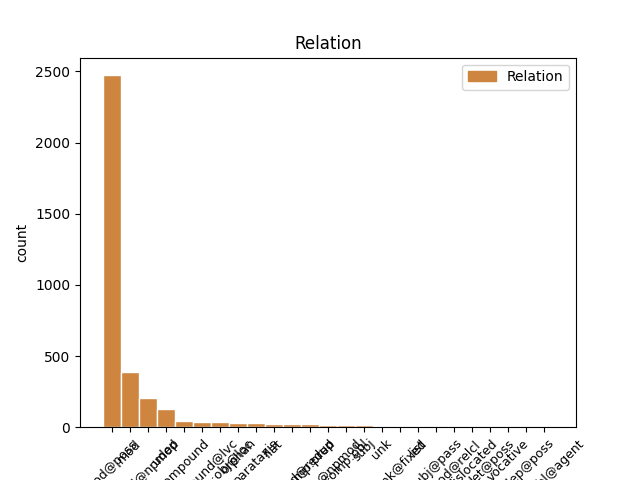
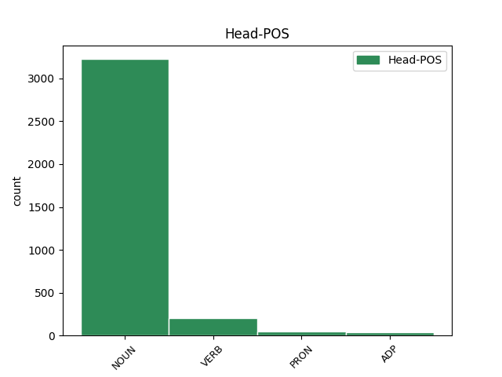
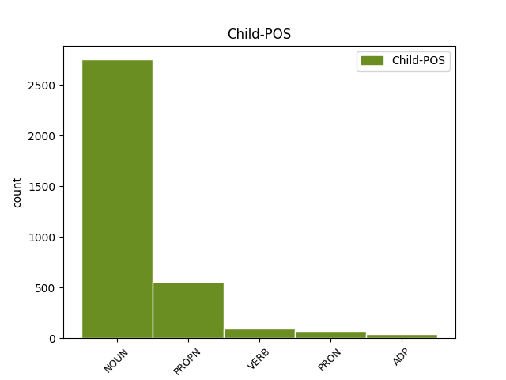

Distribution of features within this leaf



Agreement Rules sorted by frequency.
- When the dependent token is the modifer(mod@poss) of the head token, and the head token is NOUN and the dependent token is NOUN.
1 2016 _ _ _ _ 0 _ _ _
2 թվականի թվական NOUN _ Animacy=Nhum|Case=Dat|Definite=Ind|Number=Sing 3 mod@poss _ LTranslit=t’vakan|Translit=t’vakani
3 հունվարին հունվար NOUN _ Animacy=Nhum|Case=Dat|Definite=Def|Number=Sing 0 _ _ _
4 Մեծ _ _ _ _ 0 _ _ _
5 Սևանի _ _ _ _ 0 _ _ _
6 ծավալը _ _ _ _ 0 _ _ _
7 կազմել _ _ _ _ 0 _ _ _
8 էր _ _ _ _ 0 _ _ _
9 23,83 _ _ _ _ 0 _ _ _
10 մլրդ _ _ _ _ 0 _ _ _
11 խմ _ _ _ _ 0 _ _ _
12 , _ _ _ _ 0 _ _ _
13 իսկ _ _ _ _ 0 _ _ _
14 Փոքր _ _ _ _ 0 _ _ _
15 Սևանինը _ _ _ _ 0 _ _ _
16 ` _ _ _ _ 0 _ _ _
17 13,99 _ _ _ _ 0 _ _ _
18 մլրդ _ _ _ _ 0 _ _ _
19 : _ _ _ _ 0 _ _ _
1 Մեծ _ _ _ _ 0 _ _ _
2 Սևանի Սևան PROPN _ Animacy=Nhum|Case=Dat|Definite=Ind|NameType=Geo|Number=Sing 3 mod@poss _ LTranslit=Sewan|Translit=Sewani
3 ջրի ջուր NOUN _ Animacy=Nhum|Case=Dat|Definite=Ind|Number=Sing 0 _ _ _
4 հայելու _ _ _ _ 0 _ _ _
5 մակերեսը _ _ _ _ 0 _ _ _
6 2017 _ _ _ _ 0 _ _ _
7 թվականի _ _ _ _ 0 _ _ _
8 հունվարի _ _ _ _ 0 _ _ _
9 վերջի _ _ _ _ 0 _ _ _
10 դրությամբ _ _ _ _ 0 _ _ _
11 կազմել _ _ _ _ 0 _ _ _
12 է _ _ _ _ 0 _ _ _
13 939,65 _ _ _ _ 0 _ _ _
14 ք/կմ _ _ _ _ 0 _ _ _
15 , _ _ _ _ 0 _ _ _
16 իսկ _ _ _ _ 0 _ _ _
17 Փոքր _ _ _ _ 0 _ _ _
18 Սևանինը _ _ _ _ 0 _ _ _
19 ` _ _ _ _ 0 _ _ _
20 338.39 _ _ _ _ 0 _ _ _
21 : _ _ _ _ 0 _ _ _
1 Արմեն _ _ _ _ 0 _ _ _
2 Աշոտյանը _ _ _ _ 0 _ _ _
3 , _ _ _ _ 0 _ _ _
4 որը _ _ _ _ 0 _ _ _
5 , _ _ _ _ 0 _ _ _
6 ըստ _ _ _ _ 0 _ _ _
7 մամուլի _ _ _ _ 0 _ _ _
8 , _ _ _ _ 0 _ _ _
9 կարող _ _ _ _ 0 _ _ _
10 է _ _ _ _ 0 _ _ _
11 խորհրդարանի _ _ _ _ 0 _ _ _
12 նախագահ _ _ _ _ 0 _ _ _
13 դառնալ _ _ _ _ 0 _ _ _
14 , _ _ _ _ 0 _ _ _
15 մեկնաբանելով _ _ _ _ 0 _ _ _
16 ՀՀԿ-ի _ _ _ _ 0 _ _ _
17 « _ _ _ _ 0 _ _ _
18 անվտանգություն անվտանգություն NOUN _ Animacy=Nhum|Case=Nom|Definite=Ind|Number=Sing 22 mod _ LTranslit=anvtangowt’yown|Translit=anvtangowt’yown
19 և _ _ _ _ 0 _ _ _
20 առաջընթաց _ _ _ _ 0 _ _ _
21 » _ _ _ _ 0 _ _ _
22 կարգախոսը կարգախոս NOUN _ Animacy=Nhum|Case=Nom|Definite=Def|Number=Sing 0 _ _ _
23 , _ _ _ _ 0 _ _ _
24 ասել _ _ _ _ 0 _ _ _
25 է _ _ _ _ 0 _ _ _
26 , _ _ _ _ 0 _ _ _
27 որ _ _ _ _ 0 _ _ _
28 « _ _ _ _ 0 _ _ _
29 առաջընթացը _ _ _ _ 0 _ _ _
30 » _ _ _ _ 0 _ _ _
31 ապահովելու _ _ _ _ 0 _ _ _
32 է _ _ _ _ 0 _ _ _
33 Կարեն _ _ _ _ 0 _ _ _
34 Կարապետյանի _ _ _ _ 0 _ _ _
35 կառավարությունը _ _ _ _ 0 _ _ _
36 , _ _ _ _ 0 _ _ _
37 իսկ _ _ _ _ 0 _ _ _
38 « _ _ _ _ 0 _ _ _
39 անվտանգության _ _ _ _ 0 _ _ _
40 » _ _ _ _ 0 _ _ _
41 մարմնավորումը _ _ _ _ 0 _ _ _
42 Սերժ _ _ _ _ 0 _ _ _
43 Սարգսյանն _ _ _ _ 0 _ _ _
44 է _ _ _ _ 0 _ _ _
45 : _ _ _ _ 0 _ _ _
1 ՀՀԿ ՀՀԿ PROPN _ Abbr=Yes|Animacy=Nhum|Case=Nom|Definite=Ind|NameType=Com|Number=Sing 2 mod _ LTranslit=HHK|Translit=HHK
2 պատգամավոր պատգամավոր NOUN _ Animacy=Hum|Case=Nom|Definite=Ind|Number=Sing 0 _ _ _
3 Կարեն _ _ _ _ 0 _ _ _
4 Կարապետյանը _ _ _ _ 0 _ _ _
5 հայտարարել _ _ _ _ 0 _ _ _
6 է _ _ _ _ 0 _ _ _
7 , _ _ _ _ 0 _ _ _
8 որ _ _ _ _ 0 _ _ _
9 ՀՀԿ-ին _ _ _ _ 0 _ _ _
10 անդամակցությունը _ _ _ _ 0 _ _ _
11 միայն _ _ _ _ 0 _ _ _
12 խանգարում _ _ _ _ 0 _ _ _
13 է _ _ _ _ 0 _ _ _
14 իր _ _ _ _ 0 _ _ _
15 նախընտրական _ _ _ _ 0 _ _ _
16 պայքարին _ _ _ _ 0 _ _ _
17 , _ _ _ _ 0 _ _ _
18 սակայն _ _ _ _ 0 _ _ _
19 չի _ _ _ _ 0 _ _ _
20 պատրաստվում _ _ _ _ 0 _ _ _
21 լքել _ _ _ _ 0 _ _ _
22 կուսակցությունը _ _ _ _ 0 _ _ _
23 : _ _ _ _ 0 _ _ _
1 Դաշինքի _ _ _ _ 0 _ _ _
2 ցուցակի _ _ _ _ 0 _ _ _
3 առաջին _ _ _ _ 0 _ _ _
4 եռյակի _ _ _ _ 0 _ _ _
5 ՝ _ _ _ _ 0 _ _ _
6 գեներալ գեներալ NOUN _ Animacy=Hum|Case=Nom|Definite=Ind|Number=Sing 0 _ _ _
7 – _ _ _ _ 0 _ _ _
8 գնդապետ գնդապետ NOUN _ Animacy=Hum|Case=Nom|Definite=Ind|Number=Sing 6 compound _ LTranslit=gndapet|Translit=gndapet
9 Սեյրան _ _ _ _ 0 _ _ _
10 Օհանյանի _ _ _ _ 0 _ _ _
11 , _ _ _ _ 0 _ _ _
12 « _ _ _ _ 0 _ _ _
13 Ժառանգություն _ _ _ _ 0 _ _ _
14 » _ _ _ _ 0 _ _ _
15 կուսակցության _ _ _ _ 0 _ _ _
16 փոխնախագահ _ _ _ _ 0 _ _ _
17 Արմեն _ _ _ _ 0 _ _ _
18 Մարտիրոսյանի _ _ _ _ 0 _ _ _
19 և _ _ _ _ 0 _ _ _
20 ՀԱՄԱԽՄԲՈՒՄ _ _ _ _ 0 _ _ _
21 կուսակցության _ _ _ _ 0 _ _ _
22 նախագահ _ _ _ _ 0 _ _ _
23 Վարդան _ _ _ _ 0 _ _ _
24 Օսկանյանի _ _ _ _ 0 _ _ _
25 գլխավորությամբ _ _ _ _ 0 _ _ _
26 , _ _ _ _ 0 _ _ _
27 նրանք _ _ _ _ 0 _ _ _
28 մարտի _ _ _ _ 0 _ _ _
29 6-ին _ _ _ _ 0 _ _ _
30 այցելեցին _ _ _ _ 0 _ _ _
31 սահմանամերձ _ _ _ _ 0 _ _ _
32 բնակավայրեր _ _ _ _ 0 _ _ _
33 ։ _ _ _ _ 0 _ _ _
1 Reuters _ _ _ _ 0 _ _ _
2 - _ _ _ _ 0 _ _ _
3 ը _ _ _ _ 0 _ _ _
4 , _ _ _ _ 0 _ _ _
5 վկայակոչելով _ _ _ _ 0 _ _ _
6 Transparency _ _ _ _ 0 _ _ _
7 International _ _ _ _ 0 _ _ _
8 միջազգային _ _ _ _ 0 _ _ _
9 կազմակերպության _ _ _ _ 0 _ _ _
10 զեկույցը _ _ _ _ 0 _ _ _
11 , _ _ _ _ 0 _ _ _
12 հաղորդում _ _ _ _ 0 _ _ _
13 է _ _ _ _ 0 _ _ _
14 , _ _ _ _ 0 _ _ _
15 որ _ _ _ _ 0 _ _ _
16 2016 _ _ _ _ 0 _ _ _
17 թվականի _ _ _ _ 0 _ _ _
18 կոռուպցիայի _ _ _ _ 0 _ _ _
19 ընկալման _ _ _ _ 0 _ _ _
20 ինդեքսում _ _ _ _ 0 _ _ _
21 Հայաստանը _ _ _ _ 0 _ _ _
22 հայտնվել _ _ _ _ 0 _ _ _
23 է _ _ _ _ 0 _ _ _
24 113-րդ _ _ _ _ 0 _ _ _
25 հորիզոնականում հորիզոնական NOUN _ Animacy=Nhum|Case=Loc|Definite=Ind|Number=Sing 0 _ _ _
26 ՝ _ _ _ _ 0 _ _ _
27 176 _ _ _ _ 0 _ _ _
28 երկրների _ _ _ _ 0 _ _ _
29 շարքում շարք NOUN _ Animacy=Nhum|Case=Loc|Definite=Ind|Number=Sing 25 mod@npmod _ LTranslit=šark’|SpaceAfter=No|Translit=šark’owm
30 : _ _ _ _ 0 _ _ _
1 Ռեյտինգային _ _ _ _ 0 _ _ _
2 ցուցակները ցուցակ NOUN _ Animacy=Nhum|Case=Nom|Definite=Def|Number=Plur 4 orphan _ LTranslit=c’owc’ak|SpaceAfter=No|Translit=c’owc’aknerë
3 ` _ _ _ _ 0 _ _ _
4 վկա վկա NOUN _ Animacy=Hum|Case=Nom|Definite=Ind|Number=Sing 0 _ _ _
5 : _ _ _ _ 0 _ _ _
1 Այս _ _ _ _ 0 _ _ _
2 մասին _ _ _ _ 0 _ _ _
3 հայտարարել _ _ _ _ 0 _ _ _
4 է _ _ _ _ 0 _ _ _
5 նաև _ _ _ _ 0 _ _ _
6 պաշտոնական _ _ _ _ 0 _ _ _
7 Թեհրանը _ _ _ _ 0 _ _ _
8 ՝ _ _ _ _ 0 _ _ _
9 մինչև _ _ _ _ 0 _ _ _
10 անգամ _ _ _ _ 0 _ _ _
11 նախագահ _ _ _ _ 0 _ _ _
12 Ռուհանիի _ _ _ _ 0 _ _ _
13 մակարդակով մակարդակ NOUN _ Animacy=Nhum|Case=Ins|Definite=Ind|Number=Sing 14 udep _ LTranslit=makardak|Translit=makardakov
14 հայտարարելով հայտարարել VERB _ Case=Ins|Definite=Ind|Number=Coll|Polarity=Pos|Subcat=Tran|VerbForm=Gdv|Voice=Act 0 _ _ _
15 , _ _ _ _ 0 _ _ _
16 որ _ _ _ _ 0 _ _ _
17 Հայաստանը _ _ _ _ 0 _ _ _
18 դիտում _ _ _ _ 0 _ _ _
19 են _ _ _ _ 0 _ _ _
20 Կասպից _ _ _ _ 0 _ _ _
21 ծովը _ _ _ _ 0 _ _ _
22 Սև _ _ _ _ 0 _ _ _
23 ծովին _ _ _ _ 0 _ _ _
24 կապող _ _ _ _ 0 _ _ _
25 միջանցք _ _ _ _ 0 _ _ _
26 : _ _ _ _ 0 _ _ _
1 Օրինակ օրինակ NOUN _ Animacy=Nhum|Case=Nom|Definite=Ind|Number=Sing 7 parataxis _ LTranslit=òrinak|SpaceAfter=No|Translit=Òrinak
2 , _ _ _ _ 0 _ _ _
3 « _ _ _ _ 0 _ _ _
4 դրական _ _ _ _ 0 _ _ _
5 սպասումների _ _ _ _ 0 _ _ _
6 » _ _ _ _ 0 _ _ _
7 ձևավորումը ձևավորում NOUN _ Animacy=Nhum|Case=Nom|Definite=Def|Number=Sing 0 _ _ _
8 ՝ _ _ _ _ 0 _ _ _
9 վարչապետի _ _ _ _ 0 _ _ _
10 Վրաստան _ _ _ _ 0 _ _ _
11 այցը _ _ _ _ 0 _ _ _
12 և _ _ _ _ 0 _ _ _
13 « _ _ _ _ 0 _ _ _
14 Լարսին _ _ _ _ 0 _ _ _
15 այլընտրանքի _ _ _ _ 0 _ _ _
16 » _ _ _ _ 0 _ _ _
17 խոստումը _ _ _ _ 0 _ _ _
18 , _ _ _ _ 0 _ _ _
19 միլիարդների _ _ _ _ 0 _ _ _
20 ներդրումների _ _ _ _ 0 _ _ _
21 խոստումը _ _ _ _ 0 _ _ _
22 , _ _ _ _ 0 _ _ _
23 նախարարներին _ _ _ _ 0 _ _ _
24 հարյուրավոր _ _ _ _ 0 _ _ _
25 հանձնարարականները _ _ _ _ 0 _ _ _
26 : _ _ _ _ 0 _ _ _
1 Պետք _ _ _ _ 0 _ _ _
2 է _ _ _ _ 0 _ _ _
3 նշել _ _ _ _ 0 _ _ _
4 , _ _ _ _ 0 _ _ _
5 որ _ _ _ _ 0 _ _ _
6 իրանցիներն _ _ _ _ 0 _ _ _
7 այնուամենայնիվ _ _ _ _ 0 _ _ _
8 հասկանում _ _ _ _ 0 _ _ _
9 են _ _ _ _ 0 _ _ _
10 , _ _ _ _ 0 _ _ _
11 որ _ _ _ _ 0 _ _ _
12 կանգնել _ _ _ _ 0 _ _ _
13 են _ _ _ _ 0 _ _ _
14 իրավիճակը _ _ _ _ 0 _ _ _
15 տանուլ _ _ _ _ 0 _ _ _
16 տալու _ _ _ _ 0 _ _ _
17 հեռանկարի _ _ _ _ 0 _ _ _
18 առաջ _ _ _ _ 0 _ _ _
19 և _ _ _ _ 0 _ _ _
20 չեն _ _ _ _ 0 _ _ _
21 կարող _ _ _ _ 0 _ _ _
22 դա _ _ _ _ 0 _ _ _
23 չընկալել _ _ _ _ 0 _ _ _
24 որպես _ _ _ _ 0 _ _ _
25 սեփական _ _ _ _ 0 _ _ _
26 « _ _ _ _ 0 _ _ _
27 սպասման _ _ _ _ 0 _ _ _
28 » _ _ _ _ 0 _ _ _
29 քաղաքականության _ _ _ _ 0 _ _ _
30 արդյունք _ _ _ _ 0 _ _ _
31 , _ _ _ _ 0 _ _ _
32 որը _ _ _ _ 0 _ _ _
33 նրանք _ _ _ _ 0 _ _ _
34 բացատրում _ _ _ _ 0 _ _ _
35 են _ _ _ _ 0 _ _ _
36 « _ _ _ _ 0 _ _ _
37 Իրանի _ _ _ _ 0 _ _ _
38 հյուսիսում _ _ _ _ 0 _ _ _
39 ադրբեջանական _ _ _ _ 0 _ _ _
40 բնակչության _ _ _ _ 0 _ _ _
41 տրամադրությունները _ _ _ _ 0 _ _ _
42 հաշվի հաշիվ NOUN _ Animacy=Nhum|Case=Dat|Definite=Ind|Number=Sing 43 compound@lvc _ LTranslit=hašiv|Translit=hašvi
43 առնելու առնել VERB _ Case=Dat|Definite=Ind|Number=Coll|Polarity=Pos|Subcat=Tran|VerbForm=Gdv|Voice=Act 0 _ _ _
44 » _ _ _ _ 0 _ _ _
45 անհրաժեշտությամբ _ _ _ _ 0 _ _ _
46 : _ _ _ _ 0 _ _ _
1 Այդ _ _ _ _ 0 _ _ _
2 մեղքի _ _ _ _ 0 _ _ _
3 ժամին _ _ _ _ 0 _ _ _
4 տղամարդիկ _ _ _ _ 0 _ _ _
5 սիրուհիների _ _ _ _ 0 _ _ _
6 անկողիններից _ _ _ _ 0 _ _ _
7 դուրս _ _ _ _ 0 _ _ _
8 են _ _ _ _ 0 _ _ _
9 գալիս _ _ _ _ 0 _ _ _
10 ծիրան ծիրան NOUN _ Animacy=Nhum|Case=Nom|Definite=Ind|Number=Sing 0 _ _ _
11 - _ _ _ _ 0 _ _ _
12 ծիրան ծիրան NOUN _ Animacy=Nhum|Case=Nom|Definite=Ind|Number=Sing 10 compound@redup _ LTranslit=çiran|SpaceAfter=No|Translit=çiran
13 , _ _ _ _ 0 _ _ _
14 նրանք _ _ _ _ 0 _ _ _
15 իրենցով _ _ _ _ 0 _ _ _
16 տեսնում _ _ _ _ 0 _ _ _
17 են _ _ _ _ 0 _ _ _
18 փողոցը _ _ _ _ 0 _ _ _
19 լցված _ _ _ _ 0 _ _ _
20 , _ _ _ _ 0 _ _ _
21 օրվա _ _ _ _ 0 _ _ _
22 24 _ _ _ _ 0 _ _ _
23 ժամից _ _ _ _ 0 _ _ _
24 դուրս _ _ _ _ 0 _ _ _
25 եղող _ _ _ _ 0 _ _ _
26 այդ _ _ _ _ 0 _ _ _
27 ժամերին _ _ _ _ 0 _ _ _
28 նրանք _ _ _ _ 0 _ _ _
29 շռայլ _ _ _ _ 0 _ _ _
30 են _ _ _ _ 0 _ _ _
31 չունեցողի _ _ _ _ 0 _ _ _
32 պես _ _ _ _ 0 _ _ _
33 , _ _ _ _ 0 _ _ _
34 մեկի _ _ _ _ 0 _ _ _
35 փոխարեն _ _ _ _ 0 _ _ _
36 տալիս _ _ _ _ 0 _ _ _
37 են _ _ _ _ 0 _ _ _
38 երեք _ _ _ _ 0 _ _ _
39 և _ _ _ _ 0 _ _ _
40 շտապելուց _ _ _ _ 0 _ _ _
41 չեն _ _ _ _ 0 _ _ _
42 նայում _ _ _ _ 0 _ _ _
43 մեքենայի _ _ _ _ 0 _ _ _
44 լավին _ _ _ _ 0 _ _ _
45 ու _ _ _ _ 0 _ _ _
46 վատին _ _ _ _ 0 _ _ _
47 ։ _ _ _ _ 0 _ _ _
1 Նա _ _ _ _ 0 _ _ _
2 նաև _ _ _ _ 0 _ _ _
3 հայտարարել _ _ _ _ 0 _ _ _
4 է _ _ _ _ 0 _ _ _
5 , _ _ _ _ 0 _ _ _
6 որ _ _ _ _ 0 _ _ _
7 ազդանշանի _ _ _ _ 0 _ _ _
8 տոնայնությունը _ _ _ _ 0 _ _ _
9 ձևավորվում _ _ _ _ 0 _ _ _
10 է _ _ _ _ 0 _ _ _
11 ծնվելու ծնվել VERB _ Case=Dat|Definite=Ind|Number=Coll|Polarity=Pos|Subcat=Intr|VerbForm=Gdv|Voice=Mid 13 mod@poss _ LTranslit=çnvel|Translit=çnvelow
12 առաջին _ _ _ _ 0 _ _ _
13 ամիսների ամիս NOUN _ Animacy=Nhum|Case=Dat|Definite=Ind|Number=Plur 0 _ _ _
14 ընթացքում _ _ _ _ 0 _ _ _
15 և _ _ _ _ 0 _ _ _
16 յուրօրինակ _ _ _ _ 0 _ _ _
17 է _ _ _ _ 0 _ _ _
18 մնում _ _ _ _ 0 _ _ _
19 մինչև _ _ _ _ 0 _ _ _
20 կյանքի _ _ _ _ 0 _ _ _
21 վերջը _ _ _ _ 0 _ _ _
22 ։ _ _ _ _ 0 _ _ _
1 Մենք _ _ _ _ 0 _ _ _
2 մասնակից _ _ _ _ 0 _ _ _
3 ենք _ _ _ _ 0 _ _ _
4 եղել _ _ _ _ 0 _ _ _
5 խորհրդային _ _ _ _ 0 _ _ _
6 կայսրության _ _ _ _ 0 _ _ _
7 անկմանը _ _ _ _ 0 _ _ _
8 , _ _ _ _ 0 _ _ _
9 առանց _ _ _ _ 0 _ _ _
10 գիտակցելու _ _ _ _ 0 _ _ _
11 պատմական _ _ _ _ 0 _ _ _
12 պահին _ _ _ _ 0 _ _ _
13 մեր _ _ _ _ 0 _ _ _
14 մասնակցությունը _ _ _ _ 0 _ _ _
15 , _ _ _ _ 0 _ _ _
16 բայց _ _ _ _ 0 _ _ _
17 հաճախ _ _ _ _ 0 _ _ _
18 վտանգելով _ _ _ _ 0 _ _ _
19 մեզ _ _ _ _ 0 _ _ _
20 , _ _ _ _ 0 _ _ _
21 առանց _ _ _ _ 0 _ _ _
22 նշանակություն _ _ _ _ 0 _ _ _
23 տալու _ _ _ _ 0 _ _ _
24 վտանգի վտանգ NOUN _ Animacy=Nhum|Case=Dat|Definite=Ind|Number=Sing 26 mod@poss _ LTranslit=vtang|Translit=vtangi
25 իրական _ _ _ _ 0 _ _ _
26 լինելուն լինել VERB _ Case=Dat|Definite=Def|Number=Coll|Polarity=Pos|Subcat=Intr|VerbForm=Gdv|Voice=Mid 0 _ _ _
27 , _ _ _ _ 0 _ _ _
28 որովհետև _ _ _ _ 0 _ _ _
29 մենք _ _ _ _ 0 _ _ _
30 տասնյոթից _ _ _ _ 0 _ _ _
31 քսաներեք _ _ _ _ 0 _ _ _
32 տարեկան _ _ _ _ 0 _ _ _
33 ուսանողներ _ _ _ _ 0 _ _ _
34 էինք _ _ _ _ 0 _ _ _
35 ու _ _ _ _ 0 _ _ _
36 ազատությամբ _ _ _ _ 0 _ _ _
37 ոգևորված _ _ _ _ 0 _ _ _
38 : _ _ _ _ 0 _ _ _
1 - _ _ _ _ 0 _ _ _
2 Իրանը _ _ _ _ 0 _ _ _
3 գտնում _ _ _ _ 0 _ _ _
4 է _ _ _ _ 0 _ _ _
5 , _ _ _ _ 0 _ _ _
6 որ _ _ _ _ 0 _ _ _
7 իր _ _ _ _ 0 _ _ _
8 վերլուծաբաններին _ _ _ _ 0 _ _ _
9 ու _ _ _ _ 0 _ _ _
10 հետախուզական _ _ _ _ 0 _ _ _
11 ծառայություններին _ _ _ _ 0 _ _ _
12 հաջողվել _ _ _ _ 0 _ _ _
13 է _ _ _ _ 0 _ _ _
14 պարզել _ _ _ _ 0 _ _ _
15 կարգավորման _ _ _ _ 0 _ _ _
16 իրական _ _ _ _ 0 _ _ _
17 գործընթացի _ _ _ _ 0 _ _ _
18 հիմնական _ _ _ _ 0 _ _ _
19 հանգամանքներն _ _ _ _ 0 _ _ _
20 ու _ _ _ _ 0 _ _ _
21 շահերը _ _ _ _ 0 _ _ _
22 և _ _ _ _ 0 _ _ _
23 պնդում _ _ _ _ 0 _ _ _
24 է _ _ _ _ 0 _ _ _
25 , _ _ _ _ 0 _ _ _
26 որ _ _ _ _ 0 _ _ _
27 այդ _ _ _ _ 0 _ _ _
28 գործընթացը _ _ _ _ 0 _ _ _
29 դատապարտված _ _ _ _ 0 _ _ _
30 է _ _ _ _ 0 _ _ _
31 տապալման _ _ _ _ 0 _ _ _
32 մի _ _ _ _ 0 _ _ _
33 շարք _ _ _ _ 0 _ _ _
34 հանգամանքներից _ _ _ _ 0 _ _ _
35 ելնելով _ _ _ _ 0 _ _ _
36 ( _ _ _ _ 0 _ _ _
37 ԱՄՆ-ի _ _ _ _ 0 _ _ _
38 անվստահ _ _ _ _ 0 _ _ _
39 դիրքորոշումը _ _ _ _ 0 _ _ _
40 , _ _ _ _ 0 _ _ _
41 ԱՄՆ-ի _ _ _ _ 0 _ _ _
42 և _ _ _ _ 0 _ _ _
43 Եվրոպայի _ _ _ _ 0 _ _ _
44 հակասությունները _ _ _ _ 0 _ _ _
45 , _ _ _ _ 0 _ _ _
46 Ադրբեջանի _ _ _ _ 0 _ _ _
47 ղեկավարության _ _ _ _ 0 _ _ _
48 ու _ _ _ _ 0 _ _ _
49 քաղաքական _ _ _ _ 0 _ _ _
50 դասի _ _ _ _ 0 _ _ _
51 անպատրաստությունը _ _ _ _ 0 _ _ _
52 համարձակ _ _ _ _ 0 _ _ _
53 որոշումներ _ _ _ _ 0 _ _ _
54 ընդունելու _ _ _ _ 0 _ _ _
55 հարցում _ _ _ _ 0 _ _ _
56 , _ _ _ _ 0 _ _ _
57 Հայաստանում _ _ _ _ 0 _ _ _
58 իրական _ _ _ _ 0 _ _ _
59 դիմակայող _ _ _ _ 0 _ _ _
60 գործոնների _ _ _ _ 0 _ _ _
61 ընկալման _ _ _ _ 0 _ _ _
62 բացակայությունն բացակայություն NOUN _ Animacy=Nhum|Case=Nom|Definite=Def|Number=Sing 0 _ _ _
63 արտաքին _ _ _ _ 0 _ _ _
64 շահագրգիռ _ _ _ _ 0 _ _ _
65 կողմերի _ _ _ _ 0 _ _ _
66 մոտ մոտ ADP _ AdpType=Post|Case=Nom 62 udep@npmod _ LTranslit=mot|SpaceAfter=No|Translit=mot
67 ) _ _ _ _ 0 _ _ _
68 : _ _ _ _ 0 _ _ _
1 - _ _ _ _ 0 _ _ _
2 Տիկին տիկին NOUN _ Animacy=Hum|Case=Nom|Definite=Ind|Number=Sing 0 _ _ _
3 Թուխիկյան Թուխիկյան PROPN _ Animacy=Hum|Case=Nom|Definite=Ind|NameType=Sur|Number=Sing 2 flat _ LTranslit=T’owxikyan|SpaceAfter=No|Translit=T’owxikyan
4 , _ _ _ _ 0 _ _ _
5 2016-ի _ _ _ _ 0 _ _ _
6 վերջին _ _ _ _ 0 _ _ _
7 օրը _ _ _ _ 0 _ _ _
8 Հաց _ _ _ _ 0 _ _ _
9 բերող _ _ _ _ 0 _ _ _
10 Արթուր _ _ _ _ 0 _ _ _
11 Սարգսյանն _ _ _ _ 0 _ _ _
12 ազատ _ _ _ _ 0 _ _ _
13 արձակվեց _ _ _ _ 0 _ _ _
14 , _ _ _ _ 0 _ _ _
15 սակայն _ _ _ _ 0 _ _ _
16 հիմա _ _ _ _ 0 _ _ _
17 երկամսյա _ _ _ _ 0 _ _ _
18 կալանքի _ _ _ _ 0 _ _ _
19 տակ _ _ _ _ 0 _ _ _
20 է _ _ _ _ 0 _ _ _
21 : _ _ _ _ 0 _ _ _
1 Ես _ _ _ _ 0 _ _ _
2 օղին _ _ _ _ 0 _ _ _
3 եմ _ _ _ _ 0 _ _ _
4 , _ _ _ _ 0 _ _ _
5 ես _ _ _ _ 0 _ _ _
6 սիգարետն _ _ _ _ 0 _ _ _
7 եմ _ _ _ _ 0 _ _ _
8 , _ _ _ _ 0 _ _ _
9 ես _ _ _ _ 0 _ _ _
10 մորֆին _ _ _ _ 0 _ _ _
11 ու _ _ _ _ 0 _ _ _
12 կոկայինը _ _ _ _ 0 _ _ _
13 , _ _ _ _ 0 _ _ _
14 ես ես PRON _ Case=Nom|Number=Sing|Person=1|PronType=Prs 15 subj _ LTranslit=es|Translit=es
15 թղթախաղը թղթախաղ NOUN _ Animacy=Nhum|Case=Nom|Definite=Def|Number=Sing 0 _ _ _
16 , _ _ _ _ 0 _ _ _
17 ես _ _ _ _ 0 _ _ _
18 , _ _ _ _ 0 _ _ _
19 շշշը _ _ _ _ 0 _ _ _
20 ՜ _ _ _ _ 0 _ _ _
21 , _ _ _ _ 0 _ _ _
22 ես _ _ _ _ 0 _ _ _
23 սսեքսսն _ _ _ _ 0 _ _ _
24 եմ _ _ _ _ 0 _ _ _
25 ... _ _ _ _ 0 _ _ _
1 Ինչ _ _ _ _ 0 _ _ _
2 վերաբերում _ _ _ _ 0 _ _ _
3 է _ _ _ _ 0 _ _ _
4 Բոբ _ _ _ _ 0 _ _ _
5 Դիլանին _ _ _ _ 0 _ _ _
6 , _ _ _ _ 0 _ _ _
7 կարծում _ _ _ _ 0 _ _ _
8 եմ _ _ _ _ 0 _ _ _
9 , _ _ _ _ 0 _ _ _
10 նա _ _ _ _ 0 _ _ _
11 արժանի _ _ _ _ 0 _ _ _
12 է _ _ _ _ 0 _ _ _
13 այս _ _ _ _ 0 _ _ _
14 մրցանակին _ _ _ _ 0 _ _ _
15 նախ _ _ _ _ 0 _ _ _
16 երգի _ _ _ _ 0 _ _ _
17 խոսքերի _ _ _ _ 0 _ _ _
18 կարգավիճակը _ _ _ _ 0 _ _ _
19 երաժշտության _ _ _ _ 0 _ _ _
20 պարզունակ _ _ _ _ 0 _ _ _
21 կցորդից _ _ _ _ 0 _ _ _
22 պոեզիայի _ _ _ _ 0 _ _ _
23 մակարդակի մակարդակ NOUN _ Animacy=Nhum|Case=Dat|Definite=Ind|Number=Sing 24 comp:obl _ LTranslit=makardak|Translit=makardaki
24 բարձրացնելու բարձրանալ VERB _ Case=Dat|Definite=Ind|Number=Coll|Polarity=Pos|Subcat=Tran|VerbForm=Gdv|Voice=Act 0 _ _ _
25 համար _ _ _ _ 0 _ _ _
26 ։ _ _ _ _ 0 _ _ _
1 Գուցե _ _ _ _ 0 _ _ _
2 նորից _ _ _ _ 0 _ _ _
3 կալանավորելու _ _ _ _ 0 _ _ _
4 հրաման հրաման NOUN _ Animacy=Nhum|Case=Nom|Definite=Ind|Number=Sing 5 compound@lvc _ LTranslit=hraman|Translit=hraman
5 տվողը տվող NOUN _ Animacy=Hum|Case=Nom|Definite=Def|Number=Sing 0 _ _ _
6 ներքուստ _ _ _ _ 0 _ _ _
7 հենց _ _ _ _ 0 _ _ _
8 սա _ _ _ _ 0 _ _ _
9 է _ _ _ _ 0 _ _ _
10 ուզեցել _ _ _ _ 0 _ _ _
11 ` _ _ _ _ 0 _ _ _
12 ՀԱՑ _ _ _ _ 0 _ _ _
13 ԲԵՐՈՂԻ _ _ _ _ 0 _ _ _
14 կերպարը _ _ _ _ 0 _ _ _
15 զարտուղի _ _ _ _ 0 _ _ _
16 ճանապարհով _ _ _ _ 0 _ _ _
17 առավել _ _ _ _ 0 _ _ _
18 պարուրել _ _ _ _ 0 _ _ _
19 լույսով _ _ _ _ 0 _ _ _
20 : _ _ _ _ 0 _ _ _
1 Օրինակ _ _ _ _ 0 _ _ _
2 , _ _ _ _ 0 _ _ _
3 « _ _ _ _ 0 _ _ _
4 դրական _ _ _ _ 0 _ _ _
5 սպասումների _ _ _ _ 0 _ _ _
6 » _ _ _ _ 0 _ _ _
7 ձևավորումը _ _ _ _ 0 _ _ _
8 ՝ _ _ _ _ 0 _ _ _
9 վարչապետի _ _ _ _ 0 _ _ _
10 Վրաստան _ _ _ _ 0 _ _ _
11 այցը _ _ _ _ 0 _ _ _
12 և _ _ _ _ 0 _ _ _
13 « _ _ _ _ 0 _ _ _
14 Լարսին Լարս PROPN _ Animacy=Nhum|Case=Dat|Definite=Def|NameType=Geo|Number=Sing 15 mod@npmod _ LTranslit=Lars|Translit=Larsin
15 այլընտրանքի այլընտրանք NOUN _ Animacy=Nhum|Case=Dat|Definite=Ind|Number=Sing 0 _ _ _
16 » _ _ _ _ 0 _ _ _
17 խոստումը _ _ _ _ 0 _ _ _
18 , _ _ _ _ 0 _ _ _
19 միլիարդների _ _ _ _ 0 _ _ _
20 ներդրումների _ _ _ _ 0 _ _ _
21 խոստումը _ _ _ _ 0 _ _ _
22 , _ _ _ _ 0 _ _ _
23 նախարարներին _ _ _ _ 0 _ _ _
24 հարյուրավոր _ _ _ _ 0 _ _ _
25 հանձնարարականները _ _ _ _ 0 _ _ _
26 : _ _ _ _ 0 _ _ _
1 Այդ _ _ _ _ 0 _ _ _
2 մաքոքը _ _ _ _ 0 _ _ _
3 ինքնին _ _ _ _ 0 _ _ _
4 նոր _ _ _ _ 0 _ _ _
5 չէ _ _ _ _ 0 _ _ _
6 , _ _ _ _ 0 _ _ _
7 աշխարհը _ _ _ _ 0 _ _ _
8 արդեն _ _ _ _ 0 _ _ _
9 մի _ _ _ _ 0 _ _ _
10 քանի _ _ _ _ 0 _ _ _
11 տարի _ _ _ _ 0 _ _ _
12 գտնվում _ _ _ _ 0 _ _ _
13 է _ _ _ _ 0 _ _ _
14 թեժ _ _ _ _ 0 _ _ _
15 բախումների _ _ _ _ 0 _ _ _
16 փուլում _ _ _ _ 0 _ _ _
17 , _ _ _ _ 0 _ _ _
18 որի _ _ _ _ 0 _ _ _
19 կենտրոնը կենտրոն NOUN _ Animacy=Nhum|Case=Nom|Definite=Def|Number=Sing 21 subj _ LTranslit=kentron|Translit=kentronë
20 Մերձավոր _ _ _ _ 0 _ _ _
21 Արևելքը արևելք NOUN _ Animacy=Nhum|Case=Nom|Definite=Def|Number=Coll 0 _ _ _
22 ՝ _ _ _ _ 0 _ _ _
23 Սիրիան _ _ _ _ 0 _ _ _
24 է _ _ _ _ 0 _ _ _
25 , _ _ _ _ 0 _ _ _
26 որտեղ _ _ _ _ 0 _ _ _
27 ռազմական _ _ _ _ 0 _ _ _
28 փոխադարձ _ _ _ _ 0 _ _ _
29 հարվածների _ _ _ _ 0 _ _ _
30 նոր _ _ _ _ 0 _ _ _
31 բռնկում _ _ _ _ 0 _ _ _
32 է _ _ _ _ 0 _ _ _
33 և _ _ _ _ 0 _ _ _
34 արդեն _ _ _ _ 0 _ _ _
35 գրեթե _ _ _ _ 0 _ _ _
36 անհնար _ _ _ _ 0 _ _ _
37 է _ _ _ _ 0 _ _ _
38 հասկանալ _ _ _ _ 0 _ _ _
39 , _ _ _ _ 0 _ _ _
40 թե _ _ _ _ 0 _ _ _
41 ով _ _ _ _ 0 _ _ _
42 ում _ _ _ _ 0 _ _ _
43 է _ _ _ _ 0 _ _ _
44 հարվածում _ _ _ _ 0 _ _ _
45 և _ _ _ _ 0 _ _ _
46 ում _ _ _ _ 0 _ _ _
47 հետ _ _ _ _ 0 _ _ _
48 է _ _ _ _ 0 _ _ _
49 դաշնակցում _ _ _ _ 0 _ _ _
50 , _ _ _ _ 0 _ _ _
51 ով _ _ _ _ 0 _ _ _
52 ում _ _ _ _ 0 _ _ _
53 հետ _ _ _ _ 0 _ _ _
54 ինչ _ _ _ _ 0 _ _ _
55 է _ _ _ _ 0 _ _ _
56 պայմանավորվում _ _ _ _ 0 _ _ _
57 և _ _ _ _ 0 _ _ _
58 հետո _ _ _ _ 0 _ _ _
59 ով _ _ _ _ 0 _ _ _
60 է _ _ _ _ 0 _ _ _
61 խախտում _ _ _ _ 0 _ _ _
62 պայմանավորվածությունները _ _ _ _ 0 _ _ _
63 : _ _ _ _ 0 _ _ _
1 Պետք _ _ _ _ 0 _ _ _
2 է _ _ _ _ 0 _ _ _
3 նշել _ _ _ _ 0 _ _ _
4 , _ _ _ _ 0 _ _ _
5 որ _ _ _ _ 0 _ _ _
6 իրանցիներն _ _ _ _ 0 _ _ _
7 այնուամենայնիվ _ _ _ _ 0 _ _ _
8 հասկանում _ _ _ _ 0 _ _ _
9 են _ _ _ _ 0 _ _ _
10 , _ _ _ _ 0 _ _ _
11 որ _ _ _ _ 0 _ _ _
12 կանգնել _ _ _ _ 0 _ _ _
13 են _ _ _ _ 0 _ _ _
14 իրավիճակը _ _ _ _ 0 _ _ _
15 տանուլ _ _ _ _ 0 _ _ _
16 տալու տալ VERB _ Case=Dat|Definite=Ind|Number=Coll|Polarity=Pos|Subcat=Tran|VerbForm=Gdv|Voice=Act 17 mod _ LTranslit=tal|Translit=talow
17 հեռանկարի հեռանկար NOUN _ Animacy=Nhum|Case=Dat|Definite=Ind|Number=Sing 0 _ _ _
18 առաջ _ _ _ _ 0 _ _ _
19 և _ _ _ _ 0 _ _ _
20 չեն _ _ _ _ 0 _ _ _
21 կարող _ _ _ _ 0 _ _ _
22 դա _ _ _ _ 0 _ _ _
23 չընկալել _ _ _ _ 0 _ _ _
24 որպես _ _ _ _ 0 _ _ _
25 սեփական _ _ _ _ 0 _ _ _
26 « _ _ _ _ 0 _ _ _
27 սպասման _ _ _ _ 0 _ _ _
28 » _ _ _ _ 0 _ _ _
29 քաղաքականության _ _ _ _ 0 _ _ _
30 արդյունք _ _ _ _ 0 _ _ _
31 , _ _ _ _ 0 _ _ _
32 որը _ _ _ _ 0 _ _ _
33 նրանք _ _ _ _ 0 _ _ _
34 բացատրում _ _ _ _ 0 _ _ _
35 են _ _ _ _ 0 _ _ _
36 « _ _ _ _ 0 _ _ _
37 Իրանի _ _ _ _ 0 _ _ _
38 հյուսիսում _ _ _ _ 0 _ _ _
39 ադրբեջանական _ _ _ _ 0 _ _ _
40 բնակչության _ _ _ _ 0 _ _ _
41 տրամադրությունները _ _ _ _ 0 _ _ _
42 հաշվի _ _ _ _ 0 _ _ _
43 առնելու _ _ _ _ 0 _ _ _
44 » _ _ _ _ 0 _ _ _
45 անհրաժեշտությամբ _ _ _ _ 0 _ _ _
46 : _ _ _ _ 0 _ _ _
1 Իր _ _ _ _ 0 _ _ _
2 տունը տուն NOUN _ Animacy=Nhum|Case=Nom|Definite=Def|Number=Sing 0 _ _ _
3 գետնի _ _ _ _ 0 _ _ _
4 վրա վրա ADP _ AdpType=Post|Case=Nom 2 udep _ LTranslit=vra|SpaceAfter=No|Translit=vra
5 ՝ _ _ _ _ 0 _ _ _
6 բոլոր _ _ _ _ 0 _ _ _
7 օրենքներով _ _ _ _ 0 _ _ _
8 , _ _ _ _ 0 _ _ _
9 վերևը _ _ _ _ 0 _ _ _
10 երկինք _ _ _ _ 0 _ _ _
11 ու _ _ _ _ 0 _ _ _
12 աստված _ _ _ _ 0 _ _ _
13 , _ _ _ _ 0 _ _ _
14 ներքևը _ _ _ _ 0 _ _ _
15 ՝ _ _ _ _ 0 _ _ _
16 հող _ _ _ _ 0 _ _ _
17 ու _ _ _ _ 0 _ _ _
18 գերեզման _ _ _ _ 0 _ _ _
19 , _ _ _ _ 0 _ _ _
20 հարգանքով _ _ _ _ 0 _ _ _
21 դեպի _ _ _ _ 0 _ _ _
22 վերն _ _ _ _ 0 _ _ _
23 ու _ _ _ _ 0 _ _ _
24 վարը _ _ _ _ 0 _ _ _
25 , _ _ _ _ 0 _ _ _
26 դեպի _ _ _ _ 0 _ _ _
27 նրանց _ _ _ _ 0 _ _ _
28 մեծ _ _ _ _ 0 _ _ _
29 միասնությունը _ _ _ _ 0 _ _ _
30 ։ _ _ _ _ 0 _ _ _
1 Խելահեղ _ _ _ _ 0 _ _ _
2 ռիթմերի _ _ _ _ 0 _ _ _
3 , _ _ _ _ 0 _ _ _
4 զանազան _ _ _ _ 0 _ _ _
5 էքստրեմալ _ _ _ _ 0 _ _ _
6 խաղերի _ _ _ _ 0 _ _ _
7 ուղեկցությամբ _ _ _ _ 0 _ _ _
8 հուլիսի _ _ _ _ 0 _ _ _
9 21-ին _ _ _ _ 0 _ _ _
10 Տավուշի _ _ _ _ 0 _ _ _
11 մարզի _ _ _ _ 0 _ _ _
12 Ենոքավան _ _ _ _ 0 _ _ _
13 գյուղում _ _ _ _ 0 _ _ _
14 գտնվող _ _ _ _ 0 _ _ _
15 « _ _ _ _ 0 _ _ _
16 Յելլ _ _ _ _ 0 _ _ _
17 էքսթրիմ _ _ _ _ 0 _ _ _
18 Պարկ պարկ NOUN _ Animacy=Nhum|Case=Nom|Definite=Ind|Number=Sing 0 _ _ _
19 » _ _ _ _ 0 _ _ _
20 - _ _ _ _ 0 _ _ _
21 ը ը NOUN _ Animacy=Nhum|Case=Nom|Definite=Def|Number=Sing 18 unk _ LTranslit=ë|Translit=ë
22 տոնեց _ _ _ _ 0 _ _ _
23 ծննդյան _ _ _ _ 0 _ _ _
24 տարեդարձը _ _ _ _ 0 _ _ _
25 : _ _ _ _ 0 _ _ _
1 ՀԱՑ հաց NOUN _ Animacy=Nhum|Case=Nom|Definite=Ind|Number=Sing 0 _ _ _
2 ԲԵՐՈՂՆ բերող NOUN _ Animacy=Hum|Case=Nom|Definite=Def|Number=Sing 1 flat _ LTranslit=beroġ|Translit=BEROĠN
3 այլևս _ _ _ _ 0 _ _ _
4 հավաքական _ _ _ _ 0 _ _ _
5 կերպար _ _ _ _ 0 _ _ _
6 է _ _ _ _ 0 _ _ _
7 : _ _ _ _ 0 _ _ _
1 Նրանք _ _ _ _ 0 _ _ _
2 , _ _ _ _ 0 _ _ _
3 ովքեր _ _ _ _ 0 _ _ _
4 ուրիշների ուրիշ PRON _ Case=Dat|Definite=Ind|Number=Plur|PronType=Ind 5 mod@poss _ LTranslit=owriš|Translit=owrišneri
5 գլխի գլուխ NOUN _ Animacy=Nhum|Case=Dat|Definite=Ind|Number=Sing 0 _ _ _
6 վրայով _ _ _ _ 0 _ _ _
7 սևեռուն _ _ _ _ 0 _ _ _
8 նայում _ _ _ _ 0 _ _ _
9 են _ _ _ _ 0 _ _ _
10 հեռուն _ _ _ _ 0 _ _ _
11 , _ _ _ _ 0 _ _ _
12 սպասում _ _ _ _ 0 _ _ _
13 են _ _ _ _ 0 _ _ _
14 « _ _ _ _ 0 _ _ _
15 24 _ _ _ _ 0 _ _ _
16 » _ _ _ _ 0 _ _ _
17 - _ _ _ _ 0 _ _ _
18 ի _ _ _ _ 0 _ _ _
19 , _ _ _ _ 0 _ _ _
20 տարեց _ _ _ _ 0 _ _ _
21 կանայք _ _ _ _ 0 _ _ _
22 կանգնեցնում _ _ _ _ 0 _ _ _
23 են _ _ _ _ 0 _ _ _
24 միայն _ _ _ _ 0 _ _ _
25 տաքսի _ _ _ _ 0 _ _ _
26 , _ _ _ _ 0 _ _ _
27 աղջիկների _ _ _ _ 0 _ _ _
28 հետ _ _ _ _ 0 _ _ _
29 կանգնած _ _ _ _ 0 _ _ _
30 տղերքը _ _ _ _ 0 _ _ _
31 մագնիտաֆոնով _ _ _ _ 0 _ _ _
32 ավտոմեքենան _ _ _ _ 0 _ _ _
33 զգում _ _ _ _ 0 _ _ _
34 են _ _ _ _ 0 _ _ _
35 հեռվից _ _ _ _ 0 _ _ _
36 , _ _ _ _ 0 _ _ _
37 աղջիկներն _ _ _ _ 0 _ _ _
38 ու _ _ _ _ 0 _ _ _
39 ջահել _ _ _ _ 0 _ _ _
40 կանայք _ _ _ _ 0 _ _ _
41 « _ _ _ _ 0 _ _ _
42 Զապորոժեց _ _ _ _ 0 _ _ _
43 » _ _ _ _ 0 _ _ _
44 չեն _ _ _ _ 0 _ _ _
45 նստում _ _ _ _ 0 _ _ _
46 առհասարակ _ _ _ _ 0 _ _ _
47 , _ _ _ _ 0 _ _ _
48 հեռու _ _ _ _ 0 _ _ _
49 ճանապարհ _ _ _ _ 0 _ _ _
50 գնացողը _ _ _ _ 0 _ _ _
51 , _ _ _ _ 0 _ _ _
52 ջղագարը _ _ _ _ 0 _ _ _
53 , _ _ _ _ 0 _ _ _
54 ծաղիկը _ _ _ _ 0 _ _ _
55 ձեռքին _ _ _ _ 0 _ _ _
56 սպասողը _ _ _ _ 0 _ _ _
57 , _ _ _ _ 0 _ _ _
58 թատրոն _ _ _ _ 0 _ _ _
59 ու _ _ _ _ 0 _ _ _
60 հյուր _ _ _ _ 0 _ _ _
61 գնացողը _ _ _ _ 0 _ _ _
62 « _ _ _ _ 0 _ _ _
63 Զապո _ _ _ _ 0 _ _ _
64 » _ _ _ _ 0 _ _ _
65 չի _ _ _ _ 0 _ _ _
66 նստի _ _ _ _ 0 _ _ _
67 , _ _ _ _ 0 _ _ _
68 — _ _ _ _ 0 _ _ _
69 մնում _ _ _ _ 0 _ _ _
70 են _ _ _ _ 0 _ _ _
71 նրանք _ _ _ _ 0 _ _ _
72 , _ _ _ _ 0 _ _ _
73 ովքեր _ _ _ _ 0 _ _ _
74 ապահովությունը _ _ _ _ 0 _ _ _
75 գերադասում _ _ _ _ 0 _ _ _
76 են _ _ _ _ 0 _ _ _
77 արագությունից _ _ _ _ 0 _ _ _
78 , _ _ _ _ 0 _ _ _
79 ավելորդ _ _ _ _ 0 _ _ _
80 ռուբլին _ _ _ _ 0 _ _ _
81 իրենց _ _ _ _ 0 _ _ _
82 պահելը _ _ _ _ 0 _ _ _
83 շքեղությունից _ _ _ _ 0 _ _ _
84 ( _ _ _ _ 0 _ _ _
85 կտան _ _ _ _ 0 _ _ _
86 իրենց _ _ _ _ 0 _ _ _
87 ուզած _ _ _ _ 0 _ _ _
88 գինը _ _ _ _ 0 _ _ _
89 ) _ _ _ _ 0 _ _ _
90 , _ _ _ _ 0 _ _ _
91 նաև _ _ _ _ 0 _ _ _
92 շուկայից _ _ _ _ 0 _ _ _
93 , _ _ _ _ 0 _ _ _
94 խանութից _ _ _ _ 0 _ _ _
95 ելած _ _ _ _ 0 _ _ _
96 տարեց _ _ _ _ 0 _ _ _
97 մարդիկ _ _ _ _ 0 _ _ _
98 , _ _ _ _ 0 _ _ _
99 և _ _ _ _ 0 _ _ _
100 բարեհոգի _ _ _ _ 0 _ _ _
101 հարբեցողները _ _ _ _ 0 _ _ _
102 , _ _ _ _ 0 _ _ _
103 մեկ _ _ _ _ 0 _ _ _
104 էլ _ _ _ _ 0 _ _ _
105 նրանք _ _ _ _ 0 _ _ _
106 , _ _ _ _ 0 _ _ _
107 ովքեր _ _ _ _ 0 _ _ _
108 այսօր _ _ _ _ 0 _ _ _
109 էլ _ _ _ _ 0 _ _ _
110 մի _ _ _ _ 0 _ _ _
111 ռուբլով _ _ _ _ 0 _ _ _
112 պրծան _ _ _ _ 0 _ _ _
113 կանգառում _ _ _ _ 0 _ _ _
114 սրտաճաք _ _ _ _ 0 _ _ _
115 մահից _ _ _ _ 0 _ _ _
116 ։ _ _ _ _ 0 _ _ _
1 « _ _ _ _ 0 _ _ _
2 2013 _ _ _ _ 0 _ _ _
3 թվականի _ _ _ _ 0 _ _ _
4 իմ _ _ _ _ 0 _ _ _
5 գրածն _ _ _ _ 0 _ _ _
6 այսօր _ _ _ _ 0 _ _ _
7 ազատազրկելու _ _ _ _ 0 _ _ _
8 հարց հարց NOUN _ Animacy=Nhum|Case=Nom|Definite=Ind|Number=Sing 9 comp:pred _ LTranslit=harc’|Translit=harc’
9 դարձնելը դառնալ VERB _ Case=Nom|Definite=Def|Number=Coll|Polarity=Pos|Subcat=Tran|VerbForm=Gdv|Voice=Act 0 _ _ _
10 նշանակում _ _ _ _ 0 _ _ _
11 է _ _ _ _ 0 _ _ _
12 քրեորեն _ _ _ _ 0 _ _ _
13 պատժել _ _ _ _ 0 _ _ _
14 լրագրությունը _ _ _ _ 0 _ _ _
15 . _ _ _ _ 0 _ _ _
16 ես _ _ _ _ 0 _ _ _
17 պաշտպանում _ _ _ _ 0 _ _ _
18 եմ _ _ _ _ 0 _ _ _
19 ոչ _ _ _ _ 0 _ _ _
20 թե _ _ _ _ 0 _ _ _
21 պատերազմը _ _ _ _ 0 _ _ _
22 , _ _ _ _ 0 _ _ _
23 ահաբեկչությունը _ _ _ _ 0 _ _ _
24 և _ _ _ _ 0 _ _ _
25 բռնությունը _ _ _ _ 0 _ _ _
26 , _ _ _ _ 0 _ _ _
27 այլ _ _ _ _ 0 _ _ _
28 խաղաղությունը _ _ _ _ 0 _ _ _
29 » _ _ _ _ 0 _ _ _
30 , _ _ _ _ 0 _ _ _
31 - _ _ _ _ 0 _ _ _
32 հայտարարել _ _ _ _ 0 _ _ _
33 է _ _ _ _ 0 _ _ _
34 Հասան _ _ _ _ 0 _ _ _
35 Ջեմալը _ _ _ _ 0 _ _ _
36 ` _ _ _ _ 0 _ _ _
37 պահանջելով _ _ _ _ 0 _ _ _
38 անմեղ _ _ _ _ 0 _ _ _
39 ճանաչել _ _ _ _ 0 _ _ _
40 իրեն _ _ _ _ 0 _ _ _
41 : _ _ _ _ 0 _ _ _
1 Համբերություն համբերություն NOUN _ Animacy=Nhum|Case=Nom|Definite=Ind|Number=Coll 0 _ _ _
2 քեզ _ _ _ _ 0 _ _ _
3 , _ _ _ _ 0 _ _ _
4 մարդ մարդ NOUN _ Animacy=Hum|Case=Nom|Definite=Ind|Number=Sing 1 vocative _ LTranslit=mard|Translit=mard
5 ջան _ _ _ _ 0 _ _ _
6 : _ _ _ _ 0 _ _ _
1 Գեղցի գեղցի NOUN _ Animacy=Hum|Case=Nom|Definite=Ind|Number=Sing|Style=Coll 0 _ _ _
2 դու դու PRON _ Case=Nom|Number=Sing|Person=2|Polite=Infm|PronType=Prs 1 flat _ LTranslit=dow|Translit=dow
3 գեղցի _ _ _ _ 0 _ _ _
4 . _ _ _ _ 0 _ _ _
5 թե _ _ _ _ 0 _ _ _
6 ՝ _ _ _ _ 0 _ _ _
7 հորս _ _ _ _ 0 _ _ _
8 ազիզ _ _ _ _ 0 _ _ _
9 արև _ _ _ _ 0 _ _ _
10 ամենանվիրական _ _ _ _ 0 _ _ _
11 ցանկությունս _ _ _ _ 0 _ _ _
12 էն _ _ _ _ 0 _ _ _
13 ա _ _ _ _ 0 _ _ _
14 , _ _ _ _ 0 _ _ _
15 որ _ _ _ _ 0 _ _ _
16 մարդամեկին _ _ _ _ 0 _ _ _
17 պիտի _ _ _ _ 0 _ _ _
18 բերդերում _ _ _ _ 0 _ _ _
19 փտացնեմ _ _ _ _ 0 _ _ _
20 ։ _ _ _ _ 0 _ _ _
1 ՉԻ _ _ _ _ 0 _ _ _
2 ԿԱՐԵԼԻ _ _ _ _ 0 _ _ _
3 հասարակությանը _ _ _ _ 0 _ _ _
4 , _ _ _ _ 0 _ _ _
5 մարդկանց _ _ _ _ 0 _ _ _
6 , _ _ _ _ 0 _ _ _
7 մարդուն _ _ _ _ 0 _ _ _
8 , _ _ _ _ 0 _ _ _
9 ... _ _ _ _ 0 _ _ _
10 ստիպել _ _ _ _ 0 _ _ _
11 մեղքի _ _ _ _ 0 _ _ _
12 զգացումով _ _ _ _ 0 _ _ _
13 ապրել _ _ _ _ 0 _ _ _
14 ՝ _ _ _ _ 0 _ _ _
15 օգնել _ _ _ _ 0 _ _ _
16 , _ _ _ _ 0 _ _ _
17 թե _ _ _ _ 0 _ _ _
18 այս _ _ _ _ 0 _ _ _
19 մի _ _ _ _ 0 _ _ _
20 անգամ _ _ _ _ 0 _ _ _
21 չօգնելու _ _ _ _ 0 _ _ _
22 , _ _ _ _ 0 _ _ _
23 ... _ _ _ _ 0 _ _ _
24 ավել _ _ _ _ 0 _ _ _
25 է _ _ _ _ 0 _ _ _
26 գումարը _ _ _ _ 0 _ _ _
27 , _ _ _ _ 0 _ _ _
28 թե _ _ _ _ 0 _ _ _
29 ինքն _ _ _ _ 0 _ _ _
30 արժանի _ _ _ _ 0 _ _ _
31 է _ _ _ _ 0 _ _ _
32 մի _ _ _ _ 0 _ _ _
33 շոր _ _ _ _ 0 _ _ _
34 իրեն ինքը PRON _ Case=Dat|Number=Sing|Person=3|PronType=Emp|Reflex=Yes 35 comp:obl _ LTranslit=ink’ë|Translit=iren
35 գնելու գնել VERB _ Case=Dat|Definite=Ind|Number=Coll|Polarity=Pos|Subcat=Tran|VerbForm=Gdv|Voice=Act 0 _ _ _
36 , _ _ _ _ 0 _ _ _
37 ... _ _ _ _ 0 _ _ _
38 կամ _ _ _ _ 0 _ _ _
39 ՝ _ _ _ _ 0 _ _ _
40 ինքը _ _ _ _ 0 _ _ _
41 ինչը _ _ _ _ 0 _ _ _
42 չի _ _ _ _ 0 _ _ _
43 արել _ _ _ _ 0 _ _ _
44 ճիշտ _ _ _ _ 0 _ _ _
45 , _ _ _ _ 0 _ _ _
46 որ _ _ _ _ 0 _ _ _
47 այդքան _ _ _ _ 0 _ _ _
48 ուրիշների _ _ _ _ 0 _ _ _
49 օգնության _ _ _ _ 0 _ _ _
50 կարիք _ _ _ _ 0 _ _ _
51 ունի _ _ _ _ 0 _ _ _
52 ... _ _ _ _ 0 _ _ _
53 այս _ _ _ _ 0 _ _ _
54 մտքերով _ _ _ _ 0 _ _ _
55 ապրել _ _ _ _ 0 _ _ _
56 ստիպել _ _ _ _ 0 _ _ _
57 ՝ _ _ _ _ 0 _ _ _
58 ՉԻ _ _ _ _ 0 _ _ _
59 ԿԱՐԵԼԻ _ _ _ _ 0 _ _ _
60 : _ _ _ _ 0 _ _ _
1 « _ _ _ _ 0 _ _ _
2 Ձախորդ _ _ _ _ 0 _ _ _
3 Փանոսը _ _ _ _ 0 _ _ _
4 » _ _ _ _ 0 _ _ _
5 հայի _ _ _ _ 0 _ _ _
6 անցյալն _ _ _ _ 0 _ _ _
7 է _ _ _ _ 0 _ _ _
8 , _ _ _ _ 0 _ _ _
9 հայի _ _ _ _ 0 _ _ _
10 բախտը _ _ _ _ 0 _ _ _
11 , _ _ _ _ 0 _ _ _
12 որ _ _ _ _ 0 _ _ _
13 չի _ _ _ _ 0 _ _ _
14 բերել _ _ _ _ 0 _ _ _
15 , _ _ _ _ 0 _ _ _
16 « _ _ _ _ 0 _ _ _
17 Քաջ _ _ _ _ 0 _ _ _
18 Նազարը Նազար PROPN _ Animacy=Hum|Case=Nom|Definite=Def|NameType=Giv|Number=Sing 21 subj _ LTranslit=Nazar|SpaceAfter=No|Translit=Nazarë
19 » _ _ _ _ 0 _ _ _
20 ՝ _ _ _ _ 0 _ _ _
21 ներկան ներկա NOUN _ Animacy=Nhum|Case=Nom|Definite=Def|Number=Coll 0 _ _ _
22 , _ _ _ _ 0 _ _ _
23 հայոց _ _ _ _ 0 _ _ _
24 երազն _ _ _ _ 0 _ _ _
25 ու _ _ _ _ 0 _ _ _
26 երազանքը _ _ _ _ 0 _ _ _
27 , _ _ _ _ 0 _ _ _
28 իսկ _ _ _ _ 0 _ _ _
29 « _ _ _ _ 0 _ _ _
30 Կիկոսի _ _ _ _ 0 _ _ _
31 մահը _ _ _ _ 0 _ _ _
32 » _ _ _ _ 0 _ _ _
33 ՝ _ _ _ _ 0 _ _ _
34 վախն _ _ _ _ 0 _ _ _
35 ապագայի _ _ _ _ 0 _ _ _
36 նկատմամբ _ _ _ _ 0 _ _ _
37 ։ _ _ _ _ 0 _ _ _
1 Դեռատի _ _ _ _ 0 _ _ _
2 մորս _ _ _ _ 0 _ _ _
3 ուղարկեցին _ _ _ _ 0 _ _ _
4 ջրի _ _ _ _ 0 _ _ _
5 , _ _ _ _ 0 _ _ _
6 ու _ _ _ _ 0 _ _ _
7 նա _ _ _ _ 0 _ _ _
8 կանաչ _ _ _ _ 0 _ _ _
9 , _ _ _ _ 0 _ _ _
10 վիթխարի _ _ _ _ 0 _ _ _
11 ընկուզենու _ _ _ _ 0 _ _ _
12 տակ տակ ADP _ AdpType=Post|Case=Nom 0 _ _ _
13 ( _ _ _ _ 0 _ _ _
14 այսուհետ _ _ _ _ 0 _ _ _
15 ՝ _ _ _ _ 0 _ _ _
16 Հաստաբուն հաստաբուն NOUN _ Animacy=Nhum|Case=Nom|Definite=Ind|Number=Sing 12 parataxis _ LTranslit=hastabown|SpaceAfter=No|Translit=Hastabown
17 ) _ _ _ _ 0 _ _ _
18 տեսիլք _ _ _ _ 0 _ _ _
19 ունեցավ _ _ _ _ 0 _ _ _
20 ։ _ _ _ _ 0 _ _ _
1 Նրանք նա PRON _ Case=Nom|Number=Plur|Person=3|PronType=Prs 0 _ _ _
2 բոլորը _ _ _ _ 0 _ _ _
3 , _ _ _ _ 0 _ _ _
4 բոլորը բոլորը PRON _ Case=Nom|PronType=Tot 1 parataxis _ LTranslit=bolorë|Translit=bolorë
5 անշուշտ _ _ _ _ 0 _ _ _
6 , _ _ _ _ 0 _ _ _
7 աշխատանքային _ _ _ _ 0 _ _ _
8 անհատական _ _ _ _ 0 _ _ _
9 պլան _ _ _ _ 0 _ _ _
10 ու _ _ _ _ 0 _ _ _
11 պարտականություն _ _ _ _ 0 _ _ _
12 ունեն _ _ _ _ 0 _ _ _
13 ՝ _ _ _ _ 0 _ _ _
14 միամսյա _ _ _ _ 0 _ _ _
15 , _ _ _ _ 0 _ _ _
16 եռամսյա _ _ _ _ 0 _ _ _
17 , _ _ _ _ 0 _ _ _
18 տարեկան _ _ _ _ 0 _ _ _
19 և _ _ _ _ 0 _ _ _
20 դրա _ _ _ _ 0 _ _ _
21 համար _ _ _ _ 0 _ _ _
22 միշտ _ _ _ _ 0 _ _ _
23 էլ _ _ _ _ 0 _ _ _
24 պատասխան _ _ _ _ 0 _ _ _
25 են _ _ _ _ 0 _ _ _
26 տվել _ _ _ _ 0 _ _ _
27 և _ _ _ _ 0 _ _ _
28 պատասխան _ _ _ _ 0 _ _ _
29 են _ _ _ _ 0 _ _ _
30 տալիս _ _ _ _ 0 _ _ _
31 ։ _ _ _ _ 0 _ _ _
1 Իսկ _ _ _ _ 0 _ _ _
2 հիմա _ _ _ _ 0 _ _ _
3 ինչ _ _ _ _ 0 _ _ _
4 ՞ _ _ _ _ 0 _ _ _
5 պատահեց _ _ _ _ 0 _ _ _
6 . _ _ _ _ 0 _ _ _
7 նրանք _ _ _ _ 0 _ _ _
8 , _ _ _ _ 0 _ _ _
9 որ _ _ _ _ 0 _ _ _
10 մանկուց _ _ _ _ 0 _ _ _
11 տեսել _ _ _ _ 0 _ _ _
12 են _ _ _ _ 0 _ _ _
13 աշխատանքի _ _ _ _ 0 _ _ _
14 ծանրությունն _ _ _ _ 0 _ _ _
15 ու _ _ _ _ 0 _ _ _
16 հաճույքը _ _ _ _ 0 _ _ _
17 , _ _ _ _ 0 _ _ _
18 դժվարությամբ _ _ _ _ 0 _ _ _
19 ձեռք _ _ _ _ 0 _ _ _
20 գցած _ _ _ _ 0 _ _ _
21 մի _ _ _ _ 0 _ _ _
22 կտոր _ _ _ _ 0 _ _ _
23 հացը _ _ _ _ 0 _ _ _
24 ընդունել _ _ _ _ 0 _ _ _
25 որպես _ _ _ _ 0 _ _ _
26 արարիչ _ _ _ _ 0 _ _ _
27 , _ _ _ _ 0 _ _ _
28 այսօր _ _ _ _ 0 _ _ _
29 , _ _ _ _ 0 _ _ _
30 ահա _ _ _ _ 0 _ _ _
31 , _ _ _ _ 0 _ _ _
32 իրենց _ _ _ _ 0 _ _ _
33 որդիների _ _ _ _ 0 _ _ _
34 ու _ _ _ _ 0 _ _ _
35 աղջիկների _ _ _ _ 0 _ _ _
36 , _ _ _ _ 0 _ _ _
37 իրենց _ _ _ _ 0 _ _ _
38 զավակների _ _ _ _ 0 _ _ _
39 հետ _ _ _ _ 0 _ _ _
40 միացած _ _ _ _ 0 _ _ _
41 , _ _ _ _ 0 _ _ _
42 նրանց _ _ _ _ 0 _ _ _
43 հետ _ _ _ _ 0 _ _ _
44 համաձայն _ _ _ _ 0 _ _ _
45 , _ _ _ _ 0 _ _ _
46 արհամարհում _ _ _ _ 0 _ _ _
47 են _ _ _ _ 0 _ _ _
48 աշխատանքը _ _ _ _ 0 _ _ _
49 , _ _ _ _ 0 _ _ _
50 մի _ _ _ _ 0 _ _ _
51 կտոր _ _ _ _ 0 _ _ _
52 հացի _ _ _ _ 0 _ _ _
53 համար _ _ _ _ 0 _ _ _
54 սևագործ _ _ _ _ 0 _ _ _
55 աշխատանքով _ _ _ _ 0 _ _ _
56 զբաղվելը զբաղվել VERB _ Case=Nom|Definite=Def|Number=Coll|Polarity=Pos|Subcat=Intr|VerbForm=Gdv|Voice=Mid 0 _ _ _
57 , _ _ _ _ 0 _ _ _
58 այսպես _ _ _ _ 0 _ _ _
59 կոչված _ _ _ _ 0 _ _ _
60 սևագործությունը սևագործություն NOUN _ Animacy=Nhum|Case=Nom|Definite=Def|Number=Sing 56 parataxis _ LTranslit=sewagorçowt’yown|SpaceAfter=No|Translit=sewagorçowt’yownë
61 , _ _ _ _ 0 _ _ _
62 ընդունում _ _ _ _ 0 _ _ _
63 են _ _ _ _ 0 _ _ _
64 պատվի _ _ _ _ 0 _ _ _
65 դեմ _ _ _ _ 0 _ _ _
66 ։ _ _ _ _ 0 _ _ _
1 Մարդկանց _ _ _ _ 0 _ _ _
2 ճակատագրի _ _ _ _ 0 _ _ _
3 այդ _ _ _ _ 0 _ _ _
4 տնօրենները _ _ _ _ 0 _ _ _
5 ապրելու ապրել VERB _ Case=Dat|Definite=Ind|Number=Coll|Polarity=Pos|Subcat=Intr|VerbForm=Gdv|Voice=Mid 0 _ _ _
6 - _ _ _ _ 0 _ _ _
7 մեռնելու մեռնել VERB _ Case=Dat|Definite=Ind|Number=Coll|Polarity=Pos|Subcat=Intr|VerbForm=Gdv|Voice=Mid 5 compound _ LTranslit=meṙnel|Translit=meṙnelow
8 ընտրությունը _ _ _ _ 0 _ _ _
9 մի _ _ _ _ 0 _ _ _
10 րոպե _ _ _ _ 0 _ _ _
11 իրենց _ _ _ _ 0 _ _ _
12 ՝ _ _ _ _ 0 _ _ _
13 Շաքրոյին _ _ _ _ 0 _ _ _
14 ու _ _ _ _ 0 _ _ _
15 Իգնատին _ _ _ _ 0 _ _ _
16 են _ _ _ _ 0 _ _ _
17 թողել _ _ _ _ 0 _ _ _
18 . _ _ _ _ 0 _ _ _
19 իրենց _ _ _ _ 0 _ _ _
20 մեջ _ _ _ _ 0 _ _ _
21 թող _ _ _ _ 0 _ _ _
22 վճռեն _ _ _ _ 0 _ _ _
23 , _ _ _ _ 0 _ _ _
24 թե _ _ _ _ 0 _ _ _
25 ով _ _ _ _ 0 _ _ _
26 է _ _ _ _ 0 _ _ _
27 ճակատ _ _ _ _ 0 _ _ _
28 գնում _ _ _ _ 0 _ _ _
29 և _ _ _ _ 0 _ _ _
30 ով _ _ _ _ 0 _ _ _
31 է _ _ _ _ 0 _ _ _
32 ետ _ _ _ _ 0 _ _ _
33 գյուղ _ _ _ _ 0 _ _ _
34 դառնում _ _ _ _ 0 _ _ _
35 , _ _ _ _ 0 _ _ _
36 բայց _ _ _ _ 0 _ _ _
37 պապը _ _ _ _ 0 _ _ _
38 հանկարծ _ _ _ _ 0 _ _ _
39 գլխի _ _ _ _ 0 _ _ _
40 է _ _ _ _ 0 _ _ _
41 ընկել _ _ _ _ 0 _ _ _
42 , _ _ _ _ 0 _ _ _
43 որ _ _ _ _ 0 _ _ _
44 ռազմա _ _ _ _ 0 _ _ _
45 - _ _ _ _ 0 _ _ _
46 բանակային _ _ _ _ 0 _ _ _
47 կյանքի _ _ _ _ 0 _ _ _
48 շուքը _ _ _ _ 0 _ _ _
49 գուցե _ _ _ _ 0 _ _ _
50 հրապուրի _ _ _ _ 0 _ _ _
51 լավ _ _ _ _ 0 _ _ _
52 ձիու _ _ _ _ 0 _ _ _
53 , _ _ _ _ 0 _ _ _
54 երգի _ _ _ _ 0 _ _ _
55 , _ _ _ _ 0 _ _ _
56 լավ _ _ _ _ 0 _ _ _
57 հագուստի _ _ _ _ 0 _ _ _
58 , _ _ _ _ 0 _ _ _
59 քրոմե _ _ _ _ 0 _ _ _
60 սապոգների _ _ _ _ 0 _ _ _
61 ու _ _ _ _ 0 _ _ _
62 կարգադրությունների _ _ _ _ 0 _ _ _
63 Շաքրոյին _ _ _ _ 0 _ _ _
64 և _ _ _ _ 0 _ _ _
65 նույն _ _ _ _ 0 _ _ _
66 այդ _ _ _ _ 0 _ _ _
67 շուքը _ _ _ _ 0 _ _ _
68 վանի _ _ _ _ 0 _ _ _
69 ամաչկոտ _ _ _ _ 0 _ _ _
70 ու _ _ _ _ 0 _ _ _
71 մարդախույս _ _ _ _ 0 _ _ _
72 Իգնատին _ _ _ _ 0 _ _ _
73 , _ _ _ _ 0 _ _ _
74 և _ _ _ _ 0 _ _ _
75 պապը _ _ _ _ 0 _ _ _
76 ինքն _ _ _ _ 0 _ _ _
77 է _ _ _ _ 0 _ _ _
78 ընտրել _ _ _ _ 0 _ _ _
79 . _ _ _ _ 0 _ _ _
80 « _ _ _ _ 0 _ _ _
81 Իգնատին _ _ _ _ 0 _ _ _
82 տալիս _ _ _ _ 0 _ _ _
83 եմ _ _ _ _ 0 _ _ _
84 ... _ _ _ _ 0 _ _ _
85 Իգնատին _ _ _ _ 0 _ _ _
86 եմ _ _ _ _ 0 _ _ _
87 տալիս _ _ _ _ 0 _ _ _
88 , _ _ _ _ 0 _ _ _
89 այտա _ _ _ _ 0 _ _ _
90 , _ _ _ _ 0 _ _ _
91 Իգնատն _ _ _ _ 0 _ _ _
92 անլեզու _ _ _ _ 0 _ _ _
93 անճար _ _ _ _ 0 _ _ _
94 է _ _ _ _ 0 _ _ _
95 , _ _ _ _ 0 _ _ _
96 գյուղին _ _ _ _ 0 _ _ _
97 Իգնատը _ _ _ _ 0 _ _ _
98 չի _ _ _ _ 0 _ _ _
99 պետք _ _ _ _ 0 _ _ _
100 » _ _ _ _ 0 _ _ _
101 ։ _ _ _ _ 0 _ _ _
1 Աշխարհի _ _ _ _ 0 _ _ _
2 առաջնության _ _ _ _ 0 _ _ _
3 մեկնարկից _ _ _ _ 0 _ _ _
4 երկու _ _ _ _ 0 _ _ _
5 օր օր NOUN _ Animacy=Nhum|Case=Nom|Definite=Ind|Number=Sing 0 _ _ _
6 առաջ _ _ _ _ 0 _ _ _
7 առաջ առաջ ADP _ AdpType=Post|Case=Nom 5 unk _ LTranslit=aṙaǰ|Translit=aṙaǰ
8 Իսպանիայի _ _ _ _ 0 _ _ _
9 ֆուտբոլի _ _ _ _ 0 _ _ _
10 ֆեդերացիան _ _ _ _ 0 _ _ _
11 աշխատանքից _ _ _ _ 0 _ _ _
12 ազատեց _ _ _ _ 0 _ _ _
13 Խուլեն _ _ _ _ 0 _ _ _
14 Լոպետեգիին _ _ _ _ 0 _ _ _
15 , _ _ _ _ 0 _ _ _
16 պատճառաբանելով _ _ _ _ 0 _ _ _
17 , _ _ _ _ 0 _ _ _
18 որ _ _ _ _ 0 _ _ _
19 վերջինս _ _ _ _ 0 _ _ _
20 գաղտնի _ _ _ _ 0 _ _ _
21 բանակցություններ _ _ _ _ 0 _ _ _
22 է _ _ _ _ 0 _ _ _
23 վարել _ _ _ _ 0 _ _ _
24 Մադրիդի _ _ _ _ 0 _ _ _
25 Ռեալի _ _ _ _ 0 _ _ _
26 ղեկավարության _ _ _ _ 0 _ _ _
27 հետ _ _ _ _ 0 _ _ _
28 : _ _ _ _ 0 _ _ _
1 Ձեզնից _ _ _ _ 0 _ _ _
2 մեկն մեկը PRON _ Case=Nom|PronType=Ind 0 _ _ _
3 ու _ _ _ _ 0 _ _ _
4 մեկը մեկը PRON _ Case=Nom|PronType=Ind 2 compound@redup _ LTranslit=mekë|Translit=mekë
5 կհաջողացներ _ _ _ _ 0 _ _ _
6 մտնել _ _ _ _ 0 _ _ _
7 մի _ _ _ _ 0 _ _ _
8 այրի _ _ _ _ 0 _ _ _
9 ասորուհու _ _ _ _ 0 _ _ _
10 կամ _ _ _ _ 0 _ _ _
11 հրեուհու _ _ _ _ 0 _ _ _
12 անկողին _ _ _ _ 0 _ _ _
13 , _ _ _ _ 0 _ _ _
14 իսկ _ _ _ _ 0 _ _ _
15 ում _ _ _ _ 0 _ _ _
16 հայտնի _ _ _ _ 0 _ _ _
17 չէ _ _ _ _ 0 _ _ _
18 , _ _ _ _ 0 _ _ _
19 թե _ _ _ _ 0 _ _ _
20 անկողնում _ _ _ _ 0 _ _ _
21 որքան _ _ _ _ 0 _ _ _
22 հարցասեր _ _ _ _ 0 _ _ _
23 են _ _ _ _ 0 _ _ _
24 կանայք _ _ _ _ 0 _ _ _
25 և _ _ _ _ 0 _ _ _
26 որքան _ _ _ _ 0 _ _ _
27 անկեղծ _ _ _ _ 0 _ _ _
28 տղամարդիկ _ _ _ _ 0 _ _ _
29 : _ _ _ _ 0 _ _ _
1 « _ _ _ _ 0 _ _ _
2 Երկուսով _ _ _ _ 0 _ _ _
3 փախչենք _ _ _ _ 0 _ _ _
4 , _ _ _ _ 0 _ _ _
5 — _ _ _ _ 0 _ _ _
6 ասաց _ _ _ _ 0 _ _ _
7 Ներսեսը _ _ _ _ 0 _ _ _
8 , _ _ _ _ 0 _ _ _
9 — _ _ _ _ 0 _ _ _
10 մեզ _ _ _ _ 0 _ _ _
11 ինչ ինչ PRON _ Case=Nom|Definite=Ind|Number=Sing|PronType=Int 0 _ _ _
12 ՞ _ _ _ _ 0 _ _ _
13 հռոմեացիներն հռոմեացի NOUN _ Animacy=Hum|Case=Nom|Definite=Def|Number=Plur 11 subj _ LTranslit=hṙomeac’i|Translit=hṙomeac’inern
14 ու _ _ _ _ 0 _ _ _
15 արաբները _ _ _ _ 0 _ _ _
16 » _ _ _ _ 0 _ _ _
17 : _ _ _ _ 0 _ _ _
1 Մենք _ _ _ _ 0 _ _ _
2 տեսնում _ _ _ _ 0 _ _ _
3 էինք _ _ _ _ 0 _ _ _
4 , _ _ _ _ 0 _ _ _
5 որ _ _ _ _ 0 _ _ _
6 նրանք _ _ _ _ 0 _ _ _
7 սովորական _ _ _ _ 0 _ _ _
8 լծկաններ _ _ _ _ 0 _ _ _
9 չեն _ _ _ _ 0 _ _ _
10 , _ _ _ _ 0 _ _ _
11 ավելին _ _ _ _ 0 _ _ _
12 , _ _ _ _ 0 _ _ _
13 տեսնում _ _ _ _ 0 _ _ _
14 էինք _ _ _ _ 0 _ _ _
15 , _ _ _ _ 0 _ _ _
16 որ _ _ _ _ 0 _ _ _
17 մինչև _ _ _ _ 0 _ _ _
18 այդ _ _ _ _ 0 _ _ _
19 բեռի _ _ _ _ 0 _ _ _
20 տակ տակ ADP _ AdpType=Post|Case=Nom 21 udep _ LTranslit=tak|Translit=tak
21 մտնելը մտնել VERB _ Case=Nom|Definite=Def|Number=Coll|Polarity=Pos|Subcat=Intr|VerbForm=Gdv|Voice=Mid 0 _ _ _
22 նրանցից _ _ _ _ 0 _ _ _
23 և _ _ _ _ 0 _ _ _
24 ոչ _ _ _ _ 0 _ _ _
25 մեկը _ _ _ _ 0 _ _ _
26 լծկան _ _ _ _ 0 _ _ _
27 չի _ _ _ _ 0 _ _ _
28 եղել _ _ _ _ 0 _ _ _
29 , _ _ _ _ 0 _ _ _
30 նայում _ _ _ _ 0 _ _ _
31 էինք _ _ _ _ 0 _ _ _
32 նրանց _ _ _ _ 0 _ _ _
33 հպարտ _ _ _ _ 0 _ _ _
34 գլուխներին _ _ _ _ 0 _ _ _
35 , _ _ _ _ 0 _ _ _
36 նրանց _ _ _ _ 0 _ _ _
37 հպարտ _ _ _ _ 0 _ _ _
38 պարանոցներին _ _ _ _ 0 _ _ _
39 և _ _ _ _ 0 _ _ _
40 , _ _ _ _ 0 _ _ _
41 մեր _ _ _ _ 0 _ _ _
42 դռների _ _ _ _ 0 _ _ _
43 մեջ _ _ _ _ 0 _ _ _
44 կանգնած _ _ _ _ 0 _ _ _
45 , _ _ _ _ 0 _ _ _
46 մեր _ _ _ _ 0 _ _ _
47 լուսամուտներից _ _ _ _ 0 _ _ _
48 կախված _ _ _ _ 0 _ _ _
49 , _ _ _ _ 0 _ _ _
50 մտածում _ _ _ _ 0 _ _ _
51 , _ _ _ _ 0 _ _ _
52 որ _ _ _ _ 0 _ _ _
53 եթե _ _ _ _ 0 _ _ _
54 անգամ _ _ _ _ 0 _ _ _
55 Մարտինը _ _ _ _ 0 _ _ _
56 երեկ _ _ _ _ 0 _ _ _
57 , _ _ _ _ 0 _ _ _
58 մյուս _ _ _ _ 0 _ _ _
59 օրը _ _ _ _ 0 _ _ _
60 , _ _ _ _ 0 _ _ _
61 այն _ _ _ _ 0 _ _ _
62 մյուս _ _ _ _ 0 _ _ _
63 օրը _ _ _ _ 0 _ _ _
64 համբուրել _ _ _ _ 0 _ _ _
65 է _ _ _ _ 0 _ _ _
66 այդ _ _ _ _ 0 _ _ _
67 կնոջ _ _ _ _ 0 _ _ _
68 պարանոցը _ _ _ _ 0 _ _ _
69 , _ _ _ _ 0 _ _ _
70 որ _ _ _ _ 0 _ _ _
71 եթե _ _ _ _ 0 _ _ _
72 անգամ _ _ _ _ 0 _ _ _
73 այդ _ _ _ _ 0 _ _ _
74 կինը _ _ _ _ 0 _ _ _
75 երեկ _ _ _ _ 0 _ _ _
76 , _ _ _ _ 0 _ _ _
77 մյուս _ _ _ _ 0 _ _ _
78 օրը _ _ _ _ 0 _ _ _
79 , _ _ _ _ 0 _ _ _
80 այն _ _ _ _ 0 _ _ _
81 մյուս _ _ _ _ 0 _ _ _
82 օրը _ _ _ _ 0 _ _ _
83 թևերը _ _ _ _ 0 _ _ _
84 գցել _ _ _ _ 0 _ _ _
85 է _ _ _ _ 0 _ _ _
86 Մարտինի _ _ _ _ 0 _ _ _
87 պարանոցով _ _ _ _ 0 _ _ _
88 , _ _ _ _ 0 _ _ _
89 հիմա _ _ _ _ 0 _ _ _
90 նրանց _ _ _ _ 0 _ _ _
91 պարանոցներին _ _ _ _ 0 _ _ _
92 ոչ _ _ _ _ 0 _ _ _
93 թե _ _ _ _ 0 _ _ _
94 կրքոտ _ _ _ _ 0 _ _ _
95 համբույրների _ _ _ _ 0 _ _ _
96 հետքեր _ _ _ _ 0 _ _ _
97 կտեսնենք _ _ _ _ 0 _ _ _
98 , _ _ _ _ 0 _ _ _
99 այլ _ _ _ _ 0 _ _ _
100 լծասարքի _ _ _ _ 0 _ _ _
101 խարանը _ _ _ _ 0 _ _ _
102 ՝ _ _ _ _ 0 _ _ _
103 խորն _ _ _ _ 0 _ _ _
104 ու _ _ _ _ 0 _ _ _
105 անջնջելի _ _ _ _ 0 _ _ _
106 խարանը _ _ _ _ 0 _ _ _
107 ։ _ _ _ _ 0 _ _ _
1 Պարզապես _ _ _ _ 0 _ _ _
2 սկզբում _ _ _ _ 0 _ _ _
3 տեսել _ _ _ _ 0 _ _ _
4 էինք _ _ _ _ 0 _ _ _
5 նրա նա PRON _ Case=Gen|Number=Sing|Person=3|PronType=Prs 6 comp:obj@loc _ LTranslit=na|Translit=nra
6 վրայի վրա ADP _ AdpType=Post|Case=Gen 0 _ _ _
7 նշանը _ _ _ _ 0 _ _ _
8 , _ _ _ _ 0 _ _ _
9 գլխի _ _ _ _ 0 _ _ _
10 չընկնելով _ _ _ _ 0 _ _ _
11 , _ _ _ _ 0 _ _ _
12 թե _ _ _ _ 0 _ _ _
13 ինչ _ _ _ _ 0 _ _ _
14 ենք _ _ _ _ 0 _ _ _
15 տեսնում _ _ _ _ 0 _ _ _
16 , _ _ _ _ 0 _ _ _
17 ապա _ _ _ _ 0 _ _ _
18 հասկացանք _ _ _ _ 0 _ _ _
19 ու _ _ _ _ 0 _ _ _
20 մի _ _ _ _ 0 _ _ _
21 պահ _ _ _ _ 0 _ _ _
22 անգամ _ _ _ _ 0 _ _ _
23 չկասկածեցինք _ _ _ _ 0 _ _ _
24 , _ _ _ _ 0 _ _ _
25 որ _ _ _ _ 0 _ _ _
26 առնվազն _ _ _ _ 0 _ _ _
27 նրա _ _ _ _ 0 _ _ _
28 շունչը _ _ _ _ 0 _ _ _
29 միշտ _ _ _ _ 0 _ _ _
30 թևածել _ _ _ _ 0 _ _ _
31 է _ _ _ _ 0 _ _ _
32 Մարտինի _ _ _ _ 0 _ _ _
33 վրա _ _ _ _ 0 _ _ _
34 , _ _ _ _ 0 _ _ _
35 նրա _ _ _ _ 0 _ _ _
36 անգո _ _ _ _ 0 _ _ _
37 - _ _ _ _ 0 _ _ _
38 գոյությունը _ _ _ _ 0 _ _ _
39 մշտապես _ _ _ _ 0 _ _ _
40 կախված _ _ _ _ 0 _ _ _
41 է _ _ _ _ 0 _ _ _
42 եղել _ _ _ _ 0 _ _ _
43 սև _ _ _ _ 0 _ _ _
44 տան _ _ _ _ 0 _ _ _
45 գլխին _ _ _ _ 0 _ _ _
46 ։ _ _ _ _ 0 _ _ _
1 Որքան որքան PRON _ Case=Nom|PronType=Int 5 mod _ LTranslit=ork’an|Translit=Ork’an
2 որ _ _ _ _ 0 _ _ _
3 Շուշան _ _ _ _ 0 _ _ _
4 նախատատի _ _ _ _ 0 _ _ _
5 հայտնվելն հայտնվել VERB _ Case=Nom|Definite=Def|Number=Coll|Polarity=Pos|Subcat=Intr|VerbForm=Gdv|Voice=Mid 0 _ _ _
6 է _ _ _ _ 0 _ _ _
7 եղել _ _ _ _ 0 _ _ _
8 խորհրդավոր _ _ _ _ 0 _ _ _
9 , _ _ _ _ 0 _ _ _
10 այնքան _ _ _ _ 0 _ _ _
11 էլ _ _ _ _ 0 _ _ _
12 ՝ _ _ _ _ 0 _ _ _
13 հեռանալը _ _ _ _ 0 _ _ _
14 ։ _ _ _ _ 0 _ _ _
1 Որքան որքան PRON _ Case=Nom|PronType=Int 0 _ _ _
2 որ _ _ _ _ 0 _ _ _
3 Շուշան _ _ _ _ 0 _ _ _
4 նախատատի _ _ _ _ 0 _ _ _
5 հայտնվելն _ _ _ _ 0 _ _ _
6 է _ _ _ _ 0 _ _ _
7 եղել _ _ _ _ 0 _ _ _
8 խորհրդավոր _ _ _ _ 0 _ _ _
9 , _ _ _ _ 0 _ _ _
10 այնքան _ _ _ _ 0 _ _ _
11 էլ _ _ _ _ 0 _ _ _
12 ՝ _ _ _ _ 0 _ _ _
13 հեռանալը հեռանալ VERB _ Case=Nom|Definite=Def|Number=Coll|Polarity=Pos|Subcat=Intr|VerbForm=Gdv|Voice=Mid 1 mod _ LTranslit=heṙanal|SpaceAfter=No|Translit=heṙanalë
14 ։ _ _ _ _ 0 _ _ _
1 ( _ _ _ _ 0 _ _ _
2 « _ _ _ _ 0 _ _ _
3 Ես ես PRON _ Case=Nom|Number=Sing|Person=1|PronType=Prs 0 _ _ _
4 քու _ _ _ _ 0 _ _ _
5 տատմերը տատմեր NOUN _ Animacy=Hum|Case=Nom|Definite=Def|Number=Sing 3 orphan _ LTranslit=tatmer|SpaceAfter=No|Translit=tatmerë
6 ... _ _ _ _ 0 _ _ _
7 » _ _ _ _ 0 _ _ _
8 , _ _ _ _ 0 _ _ _
9 — _ _ _ _ 0 _ _ _
10 հայհոյում _ _ _ _ 0 _ _ _
11 են _ _ _ _ 0 _ _ _
12 համոզված _ _ _ _ 0 _ _ _
13 ՝ _ _ _ _ 0 _ _ _
14 ում _ _ _ _ 0 _ _ _
15 ձեռքն _ _ _ _ 0 _ _ _
16 առաջինը _ _ _ _ 0 _ _ _
17 դիպավ _ _ _ _ 0 _ _ _
18 նորածնին _ _ _ _ 0 _ _ _
19 , _ _ _ _ 0 _ _ _
20 նրա _ _ _ _ 0 _ _ _
21 հատկանիշներն _ _ _ _ 0 _ _ _
22 էլ _ _ _ _ 0 _ _ _
23 ժառանգելու _ _ _ _ 0 _ _ _
24 է _ _ _ _ 0 _ _ _
25 ) _ _ _ _ 0 _ _ _
26 ։ _ _ _ _ 0 _ _ _
1 Միջոցառման _ _ _ _ 0 _ _ _
2 հանդիսավոր _ _ _ _ 0 _ _ _
3 մասից _ _ _ _ 0 _ _ _
4 բացի _ _ _ _ 0 _ _ _
5 , _ _ _ _ 0 _ _ _
6 այլ _ _ _ _ 0 _ _ _
7 տեղեկություն _ _ _ _ 0 _ _ _
8 , _ _ _ _ 0 _ _ _
9 թե _ _ _ _ 0 _ _ _
10 ինչ _ _ _ _ 0 _ _ _
11 հանդիպումներ _ _ _ _ 0 _ _ _
12 կամ _ _ _ _ 0 _ _ _
13 շփումներ _ _ _ _ 0 _ _ _
14 է _ _ _ _ 0 _ _ _
15 ունեցել _ _ _ _ 0 _ _ _
16 Վիգեն _ _ _ _ 0 _ _ _
17 Սարգսյանը _ _ _ _ 0 _ _ _
18 Մոսկվայում _ _ _ _ 0 _ _ _
19 կամ _ _ _ _ 0 _ _ _
20 Կրեմլում _ _ _ _ 0 _ _ _
21 , _ _ _ _ 0 _ _ _
22 չկա _ _ _ _ 0 _ _ _
23 , _ _ _ _ 0 _ _ _
24 սակայն _ _ _ _ 0 _ _ _
25 հատկանշական _ _ _ _ 0 _ _ _
26 է _ _ _ _ 0 _ _ _
27 Մոսկվայից _ _ _ _ 0 _ _ _
28 վերադարձից _ _ _ _ 0 _ _ _
29 անմիջապես _ _ _ _ 0 _ _ _
30 հետո _ _ _ _ 0 _ _ _
31 Արցախ Արցախ PROPN _ Animacy=Nhum|Case=Nom|Definite=Ind|NameType=Geo|Number=Sing 32 udep _ LTranslit=Arc’ax|Translit=Arc’ax
32 մեկնելն մեկնել VERB _ Case=Nom|Number=Coll|Number[psor]=Sing|Person[psor]=3|Polarity=Pos|Subcat=Intr|VerbForm=Gdv|Voice=Mid 0 _ _ _
33 ու _ _ _ _ 0 _ _ _
34 Բակո _ _ _ _ 0 _ _ _
35 Սահակյանի _ _ _ _ 0 _ _ _
36 հետ _ _ _ _ 0 _ _ _
37 հանդիպելը _ _ _ _ 0 _ _ _
38 : _ _ _ _ 0 _ _ _
1 Մենք _ _ _ _ 0 _ _ _
2 մասնակից _ _ _ _ 0 _ _ _
3 ենք _ _ _ _ 0 _ _ _
4 եղել _ _ _ _ 0 _ _ _
5 խորհրդային _ _ _ _ 0 _ _ _
6 կայսրության _ _ _ _ 0 _ _ _
7 անկմանը _ _ _ _ 0 _ _ _
8 , _ _ _ _ 0 _ _ _
9 առանց _ _ _ _ 0 _ _ _
10 գիտակցելու _ _ _ _ 0 _ _ _
11 պատմական _ _ _ _ 0 _ _ _
12 պահին _ _ _ _ 0 _ _ _
13 մեր _ _ _ _ 0 _ _ _
14 մասնակցությունը _ _ _ _ 0 _ _ _
15 , _ _ _ _ 0 _ _ _
16 բայց _ _ _ _ 0 _ _ _
17 հաճախ _ _ _ _ 0 _ _ _
18 վտանգելով _ _ _ _ 0 _ _ _
19 մեզ _ _ _ _ 0 _ _ _
20 , _ _ _ _ 0 _ _ _
21 առանց _ _ _ _ 0 _ _ _
22 նշանակություն _ _ _ _ 0 _ _ _
23 տալու տալ VERB _ Case=Dat|Definite=Ind|Number=Coll|Polarity=Pos|Subcat=Tran|VerbForm=Gdv|Voice=Act 0 _ _ _
24 վտանգի _ _ _ _ 0 _ _ _
25 իրական _ _ _ _ 0 _ _ _
26 լինելուն լինել VERB _ Case=Dat|Definite=Def|Number=Coll|Polarity=Pos|Subcat=Intr|VerbForm=Gdv|Voice=Mid 23 comp:pred _ LTranslit=linel|SpaceAfter=No|Translit=linelown
27 , _ _ _ _ 0 _ _ _
28 որովհետև _ _ _ _ 0 _ _ _
29 մենք _ _ _ _ 0 _ _ _
30 տասնյոթից _ _ _ _ 0 _ _ _
31 քսաներեք _ _ _ _ 0 _ _ _
32 տարեկան _ _ _ _ 0 _ _ _
33 ուսանողներ _ _ _ _ 0 _ _ _
34 էինք _ _ _ _ 0 _ _ _
35 ու _ _ _ _ 0 _ _ _
36 ազատությամբ _ _ _ _ 0 _ _ _
37 ոգևորված _ _ _ _ 0 _ _ _
38 : _ _ _ _ 0 _ _ _
1 Հիմա _ _ _ _ 0 _ _ _
2 այս _ _ _ _ 0 _ _ _
3 տեսակը _ _ _ _ 0 _ _ _
4 ոնց _ _ _ _ 0 _ _ _
5 ՞ _ _ _ _ 0 _ _ _
6 հանդուրժի _ _ _ _ 0 _ _ _
7 Արթուր Արթուր PROPN _ Animacy=Hum|Case=Nom|Definite=Ind|NameType=Giv|Number=Sing 10 subj@pass _ LTranslit=Art’owr|Translit=Art’owr
8 Սարգսյանի _ _ _ _ 0 _ _ _
9 մարդկային _ _ _ _ 0 _ _ _
10 հմայքը հմայք NOUN _ Animacy=Nhum|Case=Nom|Definite=Def|Number=Sing 0 _ _ _
11 : _ _ _ _ 0 _ _ _
Disagree Examples:
1 Մտածում _ _ _ _ 0 _ _ _
2 եմ _ _ _ _ 0 _ _ _
3 ՝ _ _ _ _ 0 _ _ _
4 Ադամի Ադամ PROPN _ Animacy=Hum|Case=Dat|Definite=Ind|NameType=Prs|Number=Sing 7 mod@poss _ LTranslit=Adam|Translit=Adami
5 ու _ _ _ _ 0 _ _ _
6 Եվայի _ _ _ _ 0 _ _ _
7 վտարումը վտարում NOUN _ Animacy=Nhum|Case=Nom|Definite=Def|Number=Sing 0 _ _ _
8 Եդեմական _ _ _ _ 0 _ _ _
9 այգուց _ _ _ _ 0 _ _ _
10 ( _ _ _ _ 0 _ _ _
11 դրախտից _ _ _ _ 0 _ _ _
12 ) _ _ _ _ 0 _ _ _
13 , _ _ _ _ 0 _ _ _
14 նրանց _ _ _ _ 0 _ _ _
15 տեղափոխումն _ _ _ _ 0 _ _ _
16 այլ _ _ _ _ 0 _ _ _
17 վայր _ _ _ _ 0 _ _ _
18 , _ _ _ _ 0 _ _ _
19 ուր _ _ _ _ 0 _ _ _
20 շրջակայքն _ _ _ _ 0 _ _ _
21 այլևս _ _ _ _ 0 _ _ _
22 բարեկամական _ _ _ _ 0 _ _ _
23 չէր _ _ _ _ 0 _ _ _
24 , _ _ _ _ 0 _ _ _
25 այլ _ _ _ _ 0 _ _ _
26 խիստ _ _ _ _ 0 _ _ _
27 թշնամական _ _ _ _ 0 _ _ _
28 , _ _ _ _ 0 _ _ _
29 ուր _ _ _ _ 0 _ _ _
30 իրենց _ _ _ _ 0 _ _ _
31 հացը _ _ _ _ 0 _ _ _
32 պիտի _ _ _ _ 0 _ _ _
33 տանջանքով _ _ _ _ 0 _ _ _
34 վաստակեին _ _ _ _ 0 _ _ _
35 , _ _ _ _ 0 _ _ _
36 նույն _ _ _ _ 0 _ _ _
37 մոլորակի _ _ _ _ 0 _ _ _
38 սահմաններում _ _ _ _ 0 _ _ _
39 չէր _ _ _ _ 0 _ _ _
40 , _ _ _ _ 0 _ _ _
41 որ _ _ _ _ 0 _ _ _
42 կատարվեց _ _ _ _ 0 _ _ _
43 : _ _ _ _ 0 _ _ _
1 Մտածում _ _ _ _ 0 _ _ _
2 եմ _ _ _ _ 0 _ _ _
3 ՝ _ _ _ _ 0 _ _ _
4 Ադամի _ _ _ _ 0 _ _ _
5 ու _ _ _ _ 0 _ _ _
6 Եվայի _ _ _ _ 0 _ _ _
7 վտարումը վտարում NOUN _ Animacy=Nhum|Case=Nom|Definite=Def|Number=Sing 0 _ _ _
8 Եդեմական _ _ _ _ 0 _ _ _
9 այգուց այգի NOUN _ Animacy=Nhum|Case=Abl|Definite=Ind|Number=Sing 7 mod@npmod _ LTranslit=aygi|Translit=aygowc’
10 ( _ _ _ _ 0 _ _ _
11 դրախտից _ _ _ _ 0 _ _ _
12 ) _ _ _ _ 0 _ _ _
13 , _ _ _ _ 0 _ _ _
14 նրանց _ _ _ _ 0 _ _ _
15 տեղափոխումն _ _ _ _ 0 _ _ _
16 այլ _ _ _ _ 0 _ _ _
17 վայր _ _ _ _ 0 _ _ _
18 , _ _ _ _ 0 _ _ _
19 ուր _ _ _ _ 0 _ _ _
20 շրջակայքն _ _ _ _ 0 _ _ _
21 այլևս _ _ _ _ 0 _ _ _
22 բարեկամական _ _ _ _ 0 _ _ _
23 չէր _ _ _ _ 0 _ _ _
24 , _ _ _ _ 0 _ _ _
25 այլ _ _ _ _ 0 _ _ _
26 խիստ _ _ _ _ 0 _ _ _
27 թշնամական _ _ _ _ 0 _ _ _
28 , _ _ _ _ 0 _ _ _
29 ուր _ _ _ _ 0 _ _ _
30 իրենց _ _ _ _ 0 _ _ _
31 հացը _ _ _ _ 0 _ _ _
32 պիտի _ _ _ _ 0 _ _ _
33 տանջանքով _ _ _ _ 0 _ _ _
34 վաստակեին _ _ _ _ 0 _ _ _
35 , _ _ _ _ 0 _ _ _
36 նույն _ _ _ _ 0 _ _ _
37 մոլորակի _ _ _ _ 0 _ _ _
38 սահմաններում _ _ _ _ 0 _ _ _
39 չէր _ _ _ _ 0 _ _ _
40 , _ _ _ _ 0 _ _ _
41 որ _ _ _ _ 0 _ _ _
42 կատարվեց _ _ _ _ 0 _ _ _
43 : _ _ _ _ 0 _ _ _
1 Մտածում _ _ _ _ 0 _ _ _
2 եմ _ _ _ _ 0 _ _ _
3 ՝ _ _ _ _ 0 _ _ _
4 Ադամի _ _ _ _ 0 _ _ _
5 ու _ _ _ _ 0 _ _ _
6 Եվայի _ _ _ _ 0 _ _ _
7 վտարումը _ _ _ _ 0 _ _ _
8 Եդեմական _ _ _ _ 0 _ _ _
9 այգուց _ _ _ _ 0 _ _ _
10 ( _ _ _ _ 0 _ _ _
11 դրախտից _ _ _ _ 0 _ _ _
12 ) _ _ _ _ 0 _ _ _
13 , _ _ _ _ 0 _ _ _
14 նրանց _ _ _ _ 0 _ _ _
15 տեղափոխումն _ _ _ _ 0 _ _ _
16 այլ _ _ _ _ 0 _ _ _
17 վայր _ _ _ _ 0 _ _ _
18 , _ _ _ _ 0 _ _ _
19 ուր _ _ _ _ 0 _ _ _
20 շրջակայքն _ _ _ _ 0 _ _ _
21 այլևս _ _ _ _ 0 _ _ _
22 բարեկամական _ _ _ _ 0 _ _ _
23 չէր _ _ _ _ 0 _ _ _
24 , _ _ _ _ 0 _ _ _
25 այլ _ _ _ _ 0 _ _ _
26 խիստ _ _ _ _ 0 _ _ _
27 թշնամական _ _ _ _ 0 _ _ _
28 , _ _ _ _ 0 _ _ _
29 ուր _ _ _ _ 0 _ _ _
30 իրենց _ _ _ _ 0 _ _ _
31 հացը _ _ _ _ 0 _ _ _
32 պիտի _ _ _ _ 0 _ _ _
33 տանջանքով _ _ _ _ 0 _ _ _
34 վաստակեին _ _ _ _ 0 _ _ _
35 , _ _ _ _ 0 _ _ _
36 նույն _ _ _ _ 0 _ _ _
37 մոլորակի մոլորակ NOUN _ Animacy=Nhum|Case=Dat|Definite=Ind|Number=Sing 38 mod@poss _ LTranslit=molorak|Translit=moloraki
38 սահմաններում սահման NOUN _ Animacy=Nhum|Case=Loc|Definite=Ind|Number=Plur 0 _ _ _
39 չէր _ _ _ _ 0 _ _ _
40 , _ _ _ _ 0 _ _ _
41 որ _ _ _ _ 0 _ _ _
42 կատարվեց _ _ _ _ 0 _ _ _
43 : _ _ _ _ 0 _ _ _
1 Իրականում _ _ _ _ 0 _ _ _
2 հեչ _ _ _ _ 0 _ _ _
3 սիրելու սիրել VERB _ Case=Dat|Definite=Ind|Number=Coll|Polarity=Pos|Subcat=Tran|VerbForm=Gdv|Voice=Act 4 mod@poss _ LTranslit=sirel|Translit=sirelow
4 բան բան NOUN _ Animacy=Nhum|Case=Nom|Definite=Ind|Number=Sing 0 _ _ _
5 չի _ _ _ _ 0 _ _ _
6 . _ _ _ _ 0 _ _ _
7 հա _ _ _ _ 0 _ _ _
8 , _ _ _ _ 0 _ _ _
9 էլի _ _ _ _ 0 _ _ _
10 որ _ _ _ _ 0 _ _ _
11 ՝ _ _ _ _ 0 _ _ _
12 կապույտ _ _ _ _ 0 _ _ _
13 երկինք _ _ _ _ 0 _ _ _
14 , _ _ _ _ 0 _ _ _
15 ծովեր _ _ _ _ 0 _ _ _
16 , _ _ _ _ 0 _ _ _
17 անտառներ _ _ _ _ 0 _ _ _
18 , _ _ _ _ 0 _ _ _
19 դաշտեր _ _ _ _ 0 _ _ _
20 : _ _ _ _ 0 _ _ _
1 Ի _ _ _ _ 0 _ _ _
2 սկզբանե _ _ _ _ 0 _ _ _
3 մեր _ _ _ _ 0 _ _ _
4 ուշքումիտքն _ _ _ _ 0 _ _ _
5 ինքնապահպանումն _ _ _ _ 0 _ _ _
6 էր _ _ _ _ 0 _ _ _
7 , _ _ _ _ 0 _ _ _
8 ստամոքսը _ _ _ _ 0 _ _ _
9 լցնելը _ _ _ _ 0 _ _ _
10 , _ _ _ _ 0 _ _ _
11 էդ _ _ _ _ 0 _ _ _
12 հետո _ _ _ _ 0 _ _ _
13 , _ _ _ _ 0 _ _ _
14 երբ _ _ _ _ 0 _ _ _
15 անտառից _ _ _ _ 0 _ _ _
16 փախանք _ _ _ _ 0 _ _ _
17 , _ _ _ _ 0 _ _ _
18 քաղաքակրթություն _ _ _ _ 0 _ _ _
19 ստեղծեցինք _ _ _ _ 0 _ _ _
20 , _ _ _ _ 0 _ _ _
21 ազատ _ _ _ _ 0 _ _ _
22 ու _ _ _ _ 0 _ _ _
23 համեմատաբար _ _ _ _ 0 _ _ _
24 անվտանգ _ _ _ _ 0 _ _ _
25 ժամանակ _ _ _ _ 0 _ _ _
26 ունեցանք _ _ _ _ 0 _ _ _
27 ուրիշ _ _ _ _ 0 _ _ _
28 , _ _ _ _ 0 _ _ _
29 անտագնապ _ _ _ _ 0 _ _ _
30 աչքով աչք NOUN _ Animacy=Nhum|Case=Ins|Definite=Ind|Number=Sing 33 udep _ LTranslit=ačk’|Translit=ačk’ov
31 մեր _ _ _ _ 0 _ _ _
32 շուրջը _ _ _ _ 0 _ _ _
33 նայելու նայել VERB _ Case=Dat|Definite=Ind|Number=Coll|Polarity=Pos|Subcat=Intr|VerbForm=Gdv|Voice=Mid 0 _ _ _
34 : _ _ _ _ 0 _ _ _